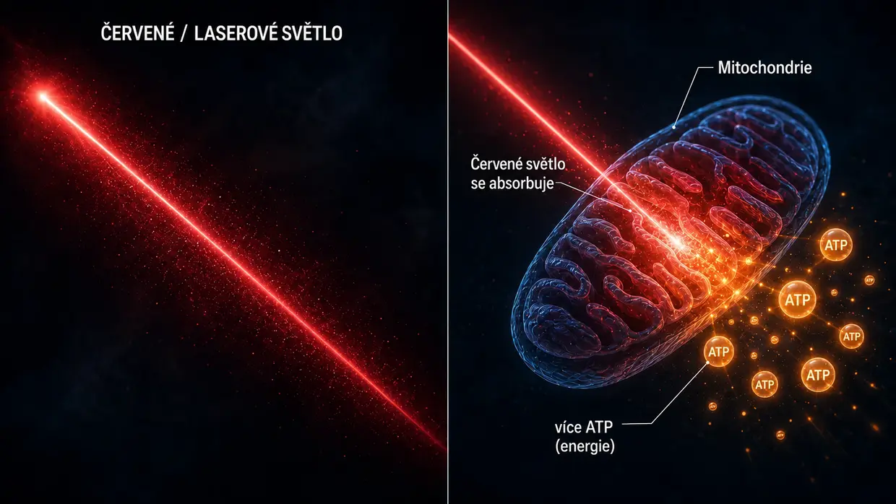
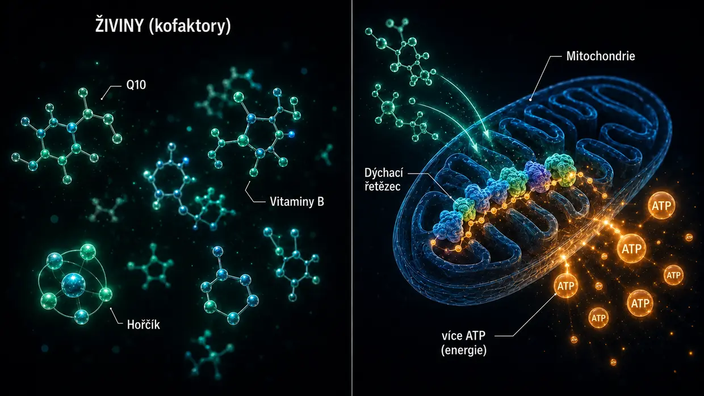

Vědecké zdroje a klinické poznatky
Tato stránka ukazuje základ všeho, co na tomto webu píšu. Můj model je mou osobní interpretací toho, co se při mém tinnitu odehrálo na buněčné úrovni. Jednotlivé stavební kameny – crosslinkery mezi aktinovými filamenty ve smyslových vláscích, aktivace kalpainů při hluku, metabolismus ATP, oprava prostřednictvím XIRP2, Central Gain v mozku, lokální osa HPA v hlemýždi, mitochondriální účinek Q10, vitaminů B a niacinu – však nejsou žádný výmysl. Jsou zdokumentovány ve výzkumu a vyzkoušeny v lékařské praxi.
Úvod: dva druhy podkladů
Nejprve otevřená poznámka: Na této stránce spojuji dva druhy podkladů – a záměrně je stavím vedle sebe, aniž bych jeden předem nadřazoval druhému.
Zaprvé: studie mechanismů crosslinkerů, kalpainů a dalších oblastí základního výzkumu. Jde o recenzované práce (posouzené nezávislými odborníky) v časopisech, jako jsou Nature Communications, Journal of Neuroscience, PNAS nebo eLife. Ukazují, jak funguje buněčný aparát (tedy procesy v jednotlivých buňkách) – jak crosslinkery stabilizují stereocilie, jak se při hluku aktivují kalpainy, jak XIRP2 provizorně stabilizuje trhliny a jak zvýšení ATP obnovuje sluch po poškození hlukem do té míry, kterou dovoluje individuální tělesná kapacita. Tyto studie jsou nepostradatelné pro pochopení mého modelu tinnitu způsobeného hlukem.
Zadruhé: klinické poznatky z praxe zkušených lékařů (tedy to, co zkušení lékaři po léta přímo pozorovali a dokumentovali u skutečných pacientů). Patří sem hlasy, jako je Dr. Lutz Wilden, který od roku 1987 – tedy déle než 35 let – nepřetržitě léčí pacienty s potížemi vnitřního ucha nízkoúrovňovou laserovou terapií a jako standardní dokumentaci pořizuje audiogramy před léčbou a po ní. Dále tisíce uživatelů domácích laserů po celém světě, kteří vlastní terapii doprovázejí kontrolními audiometrickými vyšetřeními. Ve Švýcarsku ošetřil Tinnitool od 90. let rovněž tisíce pacientů se stejnou logikou účinku (LLLT → zvýšení ATP ve vláskových buňkách). K tomu se přidává Hahnova skupina v Praze (540 pacientů ve dvou publikovaných studiích), Kjótská univerzita v Japonsku a brazilská výzkumná skupina – pokaždé s měřitelnými zlepšeními, jakmile byl laser dostatečně silný. Studie s příliš slabým laserem, které v poctivém testu nic nezjistily, níže otevřeně zařazuji do souvislostí. Nebo Dr. Dietrich Klinghardt se svou desítky let trvající prací věnovanou zátěži těžkými kovy a toxiny. Tyto zkušenosti z praxe nejsou z velké části publikovány ve významných odborných časopisech (jako je Nature Communications) – a má to důvody, o nichž mluví sám Wilden. Nic to však nemění na tom, že se touto cestou během posledních desetiletí zotavil opravdu pozoruhodný počet skutečných pacientů, doložený audiometrií.
Proč se počítají oba zdroje
Považuji za poctivější postavit oba zdroje poznatků vedle sebe než předstírat, že jedinou pravdou, kterou lze brát vážně, je pouze to, co prošlo odborným recenzním řízením. Podle mého názoru je důvodem skutečnost, že velká část prostředků na výzkum tinnitu směřuje spíše do vývoje sluchadel a patentově chráněných programů vývoje léčiv. O nepatentovatelné kombinace živin, specifické vysokodávkové laserové protokoly nebo detoxikační protokoly jednoduše neexistuje institucionální výzkumný zájem.
Nejsem lékař, vědec ani výzkumník. Jsem člověk s dřívější osobní zkušeností, který se dvakrát zcela vyléčil a jehož existující audiometrické podklady se týkají výhradně prvního průběhu. Posedle jsem četl, dělal rešerše a zkoušel různé věci. Když zde cituji studii nebo lékaře, neznamená to, že jde o důkaz, že má cesta bude fungovat u tebe. Znamená to, že jednotlivé stavební kameny, na které se odvolávám, jsou ve výzkumu a praxi brány vážně. Při akutních potížích – zejména při akutním tinnitu nebo ztrátě sluchu – se nejprve poraď s otorinolaryngologem (ORL lékařem), aby vyloučil organické příčiny.
Jedna věc předem, než se pustíme do podrobností: Nejdůležitějším poznatkem celé mé rešerše je vzorec, na který jsem narážel znovu a znovu – všude tam, kde se citelně zvýšila produkce energie ve vláskových buňkách, se tinnitus zlepšil. Tři zcela odlišné cesty, jeden společný jmenovatel. Podrobně ti to ukážu níže: Kdo chce přeskočit rovnou tam, klikne zde. Všechny ostatní nejprve provedu základními principy – tím, jak je ucho stavěné a co se při tom poškozuje.
1. část: studie mechanismů ze základního výzkumu
Crosslinkery mezi aktinovými filamenty ve stereociliích
Na hlavní stránce přirovnávám smyslové vlásky ke svazku neuvařených špaget, který drží pohromadě krátké proteinové můstky – crosslinkery. Tyto crosslinkery nejsou můj výmysl. Jde o tři konkrétní rodiny proteinů – plastin/fimbrin (PLS1), espin (ESPN) a fascin-2 (FSCN2) – a jejich existence a funkce ve smyslových vláscích je na molekulární úrovni zdokumentována déle než 20 let.
Krey JF, Krystofiak ES, Dumont RA, et al. (2016). Plastin 1 widens stereocilia by transforming actin filament packing from hexagonal to liquid. Journal of Cell Biology, 215(4), 467–482. PMID: 27811163. Odkaz
Klíčová studie kvantifikace crosslinkerů. Pomocí hmotnostní spektrometrie Krey et al. prokázali, že jedno stereocilium obsahuje mezi aktinovými filamenty přibližně 30 500 molekul plastinu-1, 16 100 molekul fascinu-2 a 14 800 molekul espinu. Plastin-1 je po samotném aktinu druhým nejčastějším proteinem v celém stereociliu. Myši bez funkčního plastinu-1 nebo fascinu-2 vykazovaly sníženou sluchovou funkci, nejvíce postiženi byli dvojití mutanti. Stereocilie bez plastinu-1 jsou kratší a tenčí než stereocilie divokého typu. Jde o přímý experimentální doklad, že crosslinkery skutečně nesou strukturální integritu smyslových vlásků.
Perrin BJ, Strandjord DM, Narayanan P, et al. (2013). β-Actin and Fascin-2 Cooperate to Maintain Stereocilia Length. Journal of Neuroscience, 33(19), 8114–8121. PMID: 23658152. Odkaz
Přímý doklad toho, co se stane při funkčním výpadku fascinu-2: Myši s mutací fascinu-2 vykazují progresivní ztrátu sluchu ve vysokých frekvencích a specifické zkrácení druhé a třetí řady stereocilií. Mutovaná varianta fascinu-2 se sice stále váže na aktin, ale už nedokáže účinně propojovat filamenta – a právě proto vlásky ztrácejí svou délku. Jde o stejný konečný strukturální účinek, který na hlavní stránce popisuji při ztrátě crosslinkerů způsobené hlukem; zde je však simulován genetickou mutací namísto štěpení kalpainem.
Sekerková G, Zheng L, Loomis PA, et al. (2004). Espins are multifunctional actin cytoskeletal regulatory proteins in the microvilli of chemosensory and mechanosensory cells. Journal of Neuroscience, 24(23), 5445–5456. PMID: 15190118. Odkaz
Strukturální charakterizace espinu jako aktinového crosslinkeru ve stereociliích. Espin je identifikován jako svazkovací protein paralelních aktinových filament a vápník jej neinhibuje – což je důležité, protože vnitřek stereocilií je při normální funkci vystaven výkyvům vápníku. Myši s defektním espinem jsou hluché a mají poruchy rovnováhy. Mutace espinu způsobují dědičnou hluchotu také u člověka.
Co to všechno společně znamená: Pokud tři crosslinkery – plastin/fimbrin, espin a fascin-2 – vedou již v důsledku genetické mutace nebo knockoutu ke ztrátě sluchu a strukturálním defektům stereocilií, je biologicky věrohodné, že získané štěpení těchto nebo příbuzných crosslinkerů kalpainem vyvolané hlukem – jak je popisuji na hlavní stránce – může mít stejný konečný strukturální účinek.
Aktivace kalpainů při hluku
Při hluku proudí do vláskové buňky obrovské množství vápníku. Toto přetížení vápníkem aktivuje kalpainy – proteázové enzymy závislé na vápníku, které následně štěpí proteiny propojující aktin. Skutečnost, že tento mechanismus existuje, doložily dvě nezávislé výzkumné laboratoře s různými inhibitory kalpainu.
Lai R, Fang Q, Wu F, Pan S, Haque K, Sha SH. (2023). Prevention of noise-induced hearing loss by calpain inhibitor MDL-28170 is associated with upregulation of PI3K/Akt survival signaling pathway. Frontiers in Cellular Neuroscience, 17, 1199656. Odkaz
Přímý doklad kalpainového mechanismu: Hluk aktivuje µ-kalpain a m-kalpain ve vláskových buňkách a inhibitor kalpainu MDL-28170 zabraňuje jak ztrátě sluchu, tak ztrátě synapsí. Studie navíc ukazuje, že kalpain štěpí strukturální protein α-fodrin – propojující protein spektrinu a aktinu v buněčné kůře. Nejde přesně o stejný typ crosslinkeru jako plastin/espin/fascin-2 specifické pro stereocilie, dokládá to však, že se kalpain při hluku aktivuje a napadá proteiny propojující aktin. Skutečnost, že by přitom mohly být postiženy také crosslinkery stereocilií, je na základě této konvergence věrohodnou hypotézou.
Yamaguchi T, Yoneyama M, Ogita K. (2017). Calpain inhibitor alleviates permanent hearing loss induced by intense noise by preventing disruption of gap junction-mediated intercellular communication in the cochlear spiral ligament. European Journal of Pharmacology, 803, 187–194. PMID: 28366808. Odkaz
Potvrzuje mechanismus poškození kalpainem z druhé laboratoře a s jiným inhibitorem (PD150606). Rozšiřuje obraz o druhé místo poškození: Kalpain při hluku napadá také komunikaci prostřednictvím gap junction ve spirálním ligamentum – v boční stěně hlemýždě. Poškození hlukem se nikdy neomezuje na jediné místo.
Doplňující četba: Fettiplace R, Hackney CM. (2006). The sensory and motor roles of auditory hair cells. Nature Reviews Neuroscience, 7(1), 19–29. – Klasický přehled stavby a funkce vláskových buněk.
Oprava aktinu prostřednictvím XIRP2 (1. fáze)
Wagner EL, Im JS, Sala S, et al. (2023). Repair of noise-induced damage to stereocilia F-actin cores is facilitated by XIRP2 and its novel mechanosensor domain. eLife, 12, e72681. PMID: 37294664. Odkaz
Nejdůležitější mechanistická práce o samoopravě vláskových buněk. Při hluku vznikají v aktinové kostře smyslových vlásků měřitelné „mezery“. U myší se během jednoho týdne uzavírají nově syntetizovaným γ-aktinem. Opravný protein XIRP2 poškození mechanicky rozpozná a zahájí opravu. Bez XIRP2 zůstává poškození trvalé.
Na hlavní stránce popisuji XIRP2 jako „pancéřovou lepicí pásku“, která místa zlomu provizorně stabilizuje (1. fáze). Vlastní oprava ve 2. fázi – vytvoření čerstvého aktinu a vložení nových crosslinkerů – trvá v této studii přibližně jeden týden u dokonale zásobených laboratorních myší. Rozhodující otázkou je, co to znamená pro dospělého člověka ve stresu, který současně uvízl v energetickém kole pro křečka – protože mu často chybí právě energie, kterou tato oprava potřebuje.
Financováno NIH (R01DC021176).
Zvýšení ATP jako páka opravy: AC102
To je ústřední bod mého protokolu pro tinnitus způsobený hlukem na farmakologické cestě: Pokud má buňka příliš málo energie, opravuje se podle mého názoru příliš pomalu a nedostatečně na to, aby dokázala čelit každodenní zátěži. Zde jsou studie, které ukazují, že farmaceutický výzkum bere tuto myšlenku vážně – berlínská farmaceutická společnost v současnosti vyvíjí léčivo zaměřené právě na tento mechanismus.
Rommelspacher H, Bera S, Brommer B, Ward R et al. (2024). A single dose of AC102 restores hearing in a guinea pig model of noise-induced hearing loss to almost prenoise levels. PNAS, 121(15), e2314763121. PMID: 38557194. Odkaz
Klíčová studie o AC102. Testy in vitro ukázaly, že AC102 výrazně zvyšuje buněčnou produkci ATP a současně odbourává reaktivní formy kyslíku (ROS). Ve zvířecím modelu jediná dávka významně zlepšila sluch po hlukovém traumatu – v názvu studie je výsledek popsán jako „téměř na úroveň před hlukem“ (konkrétně: zlepšení o 13–31 dB při průměrné ztrátě sluchu vyvolané hlukem ve výši 80 dB – významné, nikoli však úplné obnovení). Mechanismy – zvýšení produkce ATP, omezení ROS a ochrana synapsí – přesně odpovídají mechanismu mého modelu, pouze jsou vynuceny farmakologicky.
Tziridis K, Rasheed J, Kwiatkowska M, et al. (2025). A Single Dose of AC102 Reverts Tinnitus by Restoring Ribbon Synapses in Noise-Exposed Mongolian Gerbils. International Journal of Molecular Sciences, 26(11), 5124. Odkaz
Zde se navíc testovalo, zda AC102 zvrátí také vzorce chování specifické pro tinnitus. Výsledek: Z velké části ano – a páskové synapse mezi vláskovými buňkami a sluchovým nervem se významně zotavily. Přímý doklad, že nepřetržitá palba glutamátu u sluchového nervu ustane, když se obnoví buněčná energie.
Nieratschker M, Yildiz E, Gerlitz M, et al. (2024). A preoperative dose of the pyridoindole AC102 improves the recovery of residual hearing in a gerbil animal model of cochlear implantation. Cell Death & Disease, 15, 531. Odkaz
Rozšiřuje poznatky o AC102 na druhou cestu poškození: Účinná látka chrání zbytkový sluch také při traumatu spojeném s kochleární implantací. Ukazuje to, že mechanismus funguje nezávisle na spouštěči poškození – ať jde o mechanické trauma hlukem, nebo operací, buněčná nouzová kaskáda je stejná a páka ATP funguje v obou případech.
AudioCure Pharma GmbH. Clinical Study NCT05776459. AC102 je v současnosti předmětem celoevropské studie 2. fáze u pacientů s náhlou percepční nedoslýchavostí (SSNHL) – zařazeno bylo 210 pacientů, nábor je ukončen a na výsledky se stále čeká. Odkaz
Stres, osa HPA a hlemýžď jako neuroendokrinní orgán
Tinnitus způsobený stresem se vědecky zachycuje obtížněji než tinnitus způsobený hlukem. Pro můj model je zde rozhodující: Obecný chronický stres nevytváří prostřednictvím osy HPA vlastní tinnitusový tón. Může však zvýšit zranitelnost vnitřního ucha. Aktivace sympatiku může omezit prokrvení; pokud se cévy stria vascularis zúží, může být vnitřní ucho náchylnější k poškození hlukem nebo jinými vlivy. Následující práce o lokálním signálním systému HPA v hlemýždi popisují fyziologické procesy ve vnitřním uchu. Neodvozuji z nich samostatnou cestu HPA, která vytváří tinnitus.
Graham CE, Vetter DE. (2011). The mouse cochlea expresses a local hypothalamic-pituitary-adrenal equivalent signaling system and requires corticotropin-releasing factor receptor 1 to establish normal hair cell innervation and cochlear sensitivity. Journal of Neuroscience, 31(4), 1267–1278. PMID: 21273411. Odkaz
Klíčová studie. Myší hlemýžď lokálně exprimuje celý signální systém osy HPA: kortikoliberin (CRF), receptor CRF1, ACTH, mineralokortikoidní receptor a glukokortikoidní receptor. Myši s knockoutem receptoru CRF1 vykazují narušenou inervaci vláskových buněk a sníženou kochleární citlivost. Studie tedy popisuje lokální regulační systém hlemýždě, nikoli doklad samostatné cesty tinnitu prostřednictvím HPA.
Graham CE, Basappa J, Vetter DE. (2010). A corticotropin-releasing factor system expressed in the cochlea modulates hearing sensitivity and protects against noise-induced hearing loss. Neurobiology of Disease, 38(2), 246–258. PMID: 20109547. Odkaz
Předchozí studie ke Graham/Vetter 2011: Ukazuje, že lokální systém CRF v hlemýždi moduluje citlivost sluchu a může chránit před ztrátou sluchu způsobenou hlukem.
Furuta H, Mori N, Sato C, et al. (1994). Mineralocorticoid type I receptor in the rat cochlea: mRNA identification by PCR and in situ hybridization. Hearing Research, 78(2), 175–180. PMID: 7982810. Odkaz
Historicky první popis: Mineralokortikoidní receptory jsou exprimovány ve stria vascularis hlemýždě – tedy právě v „baterii“ vnitřního ucha, která udržuje zásobu draslíku v endolymfě. Kortizol tam může prostřednictvím mineralokortikoidních receptorů modulovat sekreci draslíku.
Mazurek B, Haupt H, Olze H, Szczepek AJ. (2012). Stress and tinnitus – from bedside to bench and back. Frontiers in Systems Neuroscience, 6, 47. Odkaz
Systematická syntéza z berlínské nemocnice Charité: Mazurek a Szczepek spojují původní nálezy Grahama/Vettera a Furuty do tří testovatelných hypotéz, jak může stres vyvolávat tinnitus – prostřednictvím lokálního systému HPA v hlemýždi, modulace mineralokortikoidních receptorů ve stria vascularis kortizolem (s důsledky pro sekreci draslíku) a plasticity ve sluchové dráze zprostředkované glutamátem. Jde o hypotézy autorů; nepřebírám je jako svůj model vzniku tónu.
Hébert S, Lupien SJ. (2007). The sound of stress: Blunted cortisol reactivity to psychosocial stress in tinnitus sufferers. Neuroscience Letters, 411(2), 138–142. PMID: 17084027. Odkaz
Pacienti s tinnitem vykazují při akutním psychosociálním stresu opožděnou a oploštělou kortizolovou odpověď. Studie tedy popisuje změněnou stresovou reakci u zkoumaných osob; neukazuje, že tinnitus způsobuje vyčerpání osy HPA.
Manohar S, Chen GD, Li L, Liu X, Salvi R. (2023). Chronic stress induced loudness hyperacusis, sound avoidance and auditory cortex hyperactivity. Hearing Research, 431, 108726. PMID: 36905854. Odkaz
V tomto zvířecím modelu se u potkanů vystavených chronickému kortizolovému stresu rozvinuly projevy hyperakuze a vzorce podobné tinnitu ve sluchové kůře – bez jakékoli akutní expozice hluku. Nejde o důkaz samostatné cesty tinnitu způsobeného stresem v mém modelu.
Schaette R, McAlpine D. (2011). Tinnitus with a Normal Audiogram: Physiological Evidence for Hidden Hearing Loss and Computational Model. Journal of Neuroscience, 31(38), 13452–13457. Odkaz
Schaette a McAlpine popisují model Central Gain: Když se sníží sluchový vstup, centrální sluchový systém zvýší svou citlivost. V mém modelu Central Gain pouze zesiluje již existující aktivní chybný signál; ze samotné ztráty vstupu tinnitusový tón nevzniká.
Auerbach BD, Rodrigues PV, Salvi RJ. (2014). Central Gain Control in Tinnitus and Hyperacusis. Frontiers in Neurology, 5, 206.
Eggermont JJ, Roberts LE. (2004). The neuroscience of tinnitus. Trends in Neurosciences, 27(11), 676–682.
Auerbach, Rodrigues a Salvi se zabývají konceptem Central Gain v souvislosti s tinnitem a hyperakuzí; jde o stanovisko této přehledové práce, nikoli o můj model vzniku tónu. Tinnitus a hyperakuze se mohou vyskytovat společně, nepovažuji je však za vedlejší účinky centrálního zesílení. Eggermont/Roberts (klasická práce): Tinnitus je provázen změněnou spontánní nervovou aktivitou a změněnou tonotopickou organizací ve sluchové kůře.
Trauma, uložený stres a souběžné dráždění sousedních nervových drah
Od toho oddělená centrální cesta se týká otázky: Jak může uložené trauma ještě po letech vyvolávat tělesné příznaky – a jak může lokální, autonomní ohnisko stresu v mozku skutečně spoluaktivovat sousední nervová centra?
Právě tento mechanismus Michael Prgomet didakticky popisuje jako „elektrostatické pole napětí“ (viz 14. část). Na své stránce o tinnitu způsobeném stresem jsem model vysvětlil jednoduchým jazykem. Tato část ukazuje: Jednotlivé neurobiologické stavební kameny, na nichž je tento model založen, jsou vědecky dobře zavedené. Originálním prvkem syntézy je propojení těchto stavebních kamenů do uceleného vysvětlujícího modelu – samotné jednotlivé mechanismy prošly odborným recenzním řízením a byly opakovaně replikovány.
5.1.1 Trauma zanechává měřitelné neurobiologické stopy
Silný nebo chronický stresový zážitek prokazatelně mění strukturu a funkci určitých oblastí mozku. Trauma nezůstává „jen psychické“, ale fyzicky se propojí v nervovém systému.
McEwen BS, Nasca C, Gray JD. (2016). Stress Effects on Neuronal Structure: Hippocampus, Amygdala, and Prefrontal Cortex. Neuropsychopharmacology, 41(1), 3–23. PMID: 26076834. Odkaz
Popisuje, že chronický stres vyvolává měřitelné strukturální a funkční změny v hipokampu, amygdale a prefrontální kůře. Právě tyto oblasti jsou klíčové pro paměť, strach, hodnocení a regulaci stresu – tedy přesně ty struktury, které hrají roli v trvale aktivním stresovém vzorci.
Sherin JE, Nemeroff CB. (2011). Post-traumatic stress disorder: the neurobiological impact of psychological trauma. Dialogues in Clinical Neuroscience, 13(3), 263–278. PMID: 22034143. Odkaz
Přehled dlouhodobých neurobiologických účinků traumatu: hyperreaktivita amygdaly, nedostatky prefrontální kontroly, změny hipokampu a trvalé změny systémů stresových hormonů. Trauma tedy není „pryč, jakmile situace skončí“ – je propojeno v nervovém systému.
Yehuda R, LeDoux J. (2007). Response Variation following Trauma: A Translational Neuroscience Approach to Understanding PTSD. Neuron, 56(1), 19–32. PMID: 17920012. Odkaz
Ukazuje, že trauma může dlouhodobě měnit osu HPA, noradrenergní systém, autonomní reaktivitu a funkci hipokampu. To je mechanistický základ uložených stresových vzorců, které mohou dál běžet na pozadí.
5.1.2 Alostatická zátěž – proč se problematickým stává až chronický stres
Akutní situační stres je zdravý a dá se dobře zvládnout. Jevy, které popisuji na stránce o tinnitu způsobeném stresem, nenastávají při běžné hádce nebo akutní zátěži – vznikají teprve tehdy, když se systém už nedokáže zotavovat a zátěž se postupem času hromadí.
McEwen BS. (1998). Stress, Adaptation, and Disease: Allostasis and Allostatic Load. Annals of the New York Academy of Sciences, 840(1), 33–44. PMID: 9629234. Odkaz
Zakládá koncept alostatické zátěže. Akutní stres je užitečný; chronická, kumulativní zátěž systém poškozuje. Právě tento bod přesně odlišuje můj model od zavádějícího tvrzení „stres obecně způsobuje tinnitus“. Nejde o každodenní stres – jde o chronicky předem zatížené systémy.
McEwen BS, Stellar E. (1993). Stress and the individual: mechanisms leading to disease. Archives of Internal Medicine, 153(18), 2093–2101. PMID: 8379800.
Popisuje mechanismy, jimiž chronický stres vede k onemocnění – prostřednictvím kumulativní zátěže, nikoli jednotlivých epizod. Jasně vysvětluje, proč se tyto jevy nerozvinou u každého člověka s každodenním stresem, ale pouze u lidí, jejichž systém je již chronicky destabilizovaný.
5.1.3 Centrální senzitivizace – zesilovač v předem zatíženém nervovém systému
Při chronické zátěži se centrální nervový systém stává citlivějším na podněty. Inhibice klesá, dráždivost stoupá a prahy podnětů se snižují. Podněty, které byly dříve podprahové, náhle stačí k vyvolání příznaků. To je vědecký popis toho, co na stránce o tinnitu způsobeném stresem označuji jako „předem zatížený systém otevřený podnětům“.
Woolf CJ. (2011). Central sensitization: Implications for the diagnosis and treatment of pain. Pain, 152(3 Suppl), S2–S15. PMID: 20961685. Odkaz
Definuje centrální senzitivizaci jako zvýšenou reaktivitu centrálních neuronů na normální nebo podprahové vstupní podněty. Jde o zavedený základní kámen moderního výzkumu bolesti. Můj model přenáší tento princip na tinnitus způsobený stresem.
Latremoliere A, Woolf CJ. (2009). Central sensitization: a generator of pain hypersensitivity by central neural plasticity. The Journal of Pain, 10(9), 895–926. PMID: 19712899. Odkaz
Podrobný popis buněčných a molekulárních mechanismů centrální senzitivizace. Ukazuje, jak předem zatížený systém teprve vytváří podmínky k tomu, aby se malá stresová pole mohla projevit příznaky.
Yunus MB. (2008). Central sensitivity syndromes: a new paradigm and group nosology for fibromyalgia and overlapping conditions. Seminars in Arthritis and Rheumatism, 37(6), 339–352. PMID: 18191990. Odkaz
Uplatňuje koncept centrální senzitivizace na fibromyalgii, chronické vyčerpání, syndrom dráždivého tračníku, chronický tinnitus a příbuzné syndromy. To je právě most, který vědecky ukotvuje můj model tinnitu způsobeného stresem.
5.1.4 Efaptická vazba – přímé elektrické souběžné dráždění sousedních nervových buněk
To je tvrdé neurofyziologické jádro metafory Van de Graaffova generátoru. Když určitá oblast neuronů silně a synchronně vysílá vzruchy, vytváří lokální elektrická pole, která mohou skutečně ovlivňovat sousední nervové buňky – bez klasické synapse. Při dostatečné aktivitě mohou tato pole posunout sousední buňky přes práh podráždění a synchronizovat jejich vzorce výbojů. Právě to je mechanismus za větou „nerv A vysílá vzruchy a strhne s sebou nerv B“.
Anastassiou CA, Perin R, Markram H, Koch C. (2011). Ephaptic coupling of cortical neurons. Nature Neuroscience, 14(2), 217–223. PMID: 21240273. Odkaz
Přímý experimentální doklad efaptické vazby v mozkové kůře. Studie ukázala, že extracelulární elektrická pole mohou měnit membránové napětí sousedních neuronů a synchronizovat časování akčních potenciálů. Jde o klíčový doklad toho, že silně aktivní skupina nervových buněk může sousední buňky skutečně elektricky spoluaktivovat.
Buzsáki G, Anastassiou CA, Koch C. (2012). The origin of extracellular fields and currents — EEG, ECoG, LFP and spikes. Nature Reviews Neuroscience, 13(6), 407–420. PMID: 22595786. Odkaz
Základní přehled vzniku elektrických polí v mozku. Popisuje, jak mohou synchronně aktivní skupiny neuronů prostřednictvím napěťových gradientů funkčně ovlivňovat jiné neurony. Jasně ukazuje: Nejde o „velké blesky“ jako u vysokonapěťové koule – jsou to malé, lokálně omezené účinky polí, ale jsou skutečné a biologicky účinné.
Fröhlich F, McCormick DA. (2010). Endogenous electric fields may guide neocortical network activity. Neuron, 67(1), 129–143. PMID: 20624597. Odkaz
Ukazuje, že endogenní elektrická pole aktivitu neuronových sítí nejen doprovázejí, ale také ji příčinně spoluřídí. Silný hřebík do rakve představy, že účinky elektrických polí v mozku jsou pouze doprovodným jevem.
5.1.5 Kindling – opakované dráždění razí vzorci cestu
Pokud je určitá oblast neuronů opakovaně podprahově drážděna, postupem času se aktivuje stále snáze – a stále více zapojuje i sousední oblasti. Tento jev byl zaveden ve výzkumu epilepsie a dnes se přenáší také na stavy chronické bolesti, traumatu a podráždění.
Goddard GV, McIntyre DC, Leech CK. (1969). A permanent change in brain function resulting from daily electrical stimulation. Experimental Neurology, 25(3), 295–330. PMID: 4981856.
Klasická původní práce o fenoménu kindlingu. Opakované podprahové dráždění vytváří trvalou změnu funkce mozku – daná oblast se postupem času aktivuje stále snáze.
Post RM. (2007). Kindling and sensitization as models for affective episode recurrence, cyclicity, and tolerance phenomena. Neuroscience & Biobehavioral Reviews, 31(6), 858–873. PMID: 17555817. Odkaz
Přenesení konceptu kindlingu na afektivní poruchy, posttraumatickou stresovou poruchu (PTSD) a chronické stresové stavy. Vědecky vysvětluje, proč chronicky reaktivované stresové vzorce postupem času neodeznívají, ale mohou sílit a zasahovat větší plochu – přesně ten jev, který popisuji na stránce o tinnitu způsobeném stresem.
5.1.6 Aktivace glií a neurozánět – biochemický zesilovač
Chronické dráždění aktivuje mikroglie a astrocyty. Ty uvolňují mediátory (TNF-α, IL-1β, IL-6), které měřitelně zvyšují dráždivost okolních neuronů – a tím celou oblast uvádějí do stavu, v němž ji lze snáze aktivovat. To je biochemický zesilovač mezi „předem zatíženým systémem“ a stavem, kdy „stresové pole může prorazit“.
Ji RR, Nackley A, Huh Y, Terrando N, Maixner W. (2018). Neuroinflammation and Central Sensitization in Chronic and Widespread Pain. Anesthesiology, 129(2), 343–366. PMID: 29462012. Odkaz
Přímý doklad toho, jak aktivace glií pohání centrální senzitivizaci. Mikroglie a astrocyty nejsou jen pasivní podpůrné buňky – aktivně modulují dráždivost neuronů a při chronické zátěži mohou nervovou tkáň uvést do trvale otevřenějšího stavu vůči podnětům.
Michopoulos V, Powers A, Gillespie CF, Ressler KJ, Jovanovic T. (2017). Inflammation in Fear- and Anxiety-Based Disorders: PTSD, GAD, and Beyond. Neuropsychopharmacology, 42(1), 254–270. PMID: 27510423. Odkaz
Posttraumatická stresová porucha (PTSD) a chronická úzkost jsou spojeny s měřitelnými zánětlivými změnami v nervovém systému. Tím se kruh uzavírá: trauma → stres → neurozánět → tkáň otevřenější podnětům → snazší aktivace uložených stresových vzorců.
5.1.7 Talamokortikální dysrytmie – přímá souvislost s tinnitem
Studie MEG a EEG u chronického tinnitu ukazují patologické oscilační vzorce mezi talamem a sluchovou kůrou. Lokálně změněný vzorec aktivity vytváří přetrvávající vazby theta–gama, které mohou přispívat k trvalému vnímání tónu. Jde o přímý neurofyziologický most mezi nadměrně aktivním stresovým polem a trvalým vnímáním tinnitu.
Llinás RR, Ribary U, Jeanmonod D, Kronberg E, Mitra PP. (1999). Thalamocortical dysrhythmia: A neurological and neuropsychiatric syndrome characterized by magnetoencephalography. PNAS, 96(26), 15222–15227. PMID: 10611366. Odkaz
Zakládá koncept talamokortikální dysrytmie jako mechanismu chronických neurologických příznaků – měřeného vysoce citlivou technologií MEG. Právě těmi přístroji MEG, s nimiž lze zobrazit také velmi malá, lokálně omezená pole napětí v mozku.
De Ridder D, Vanneste S, Langguth B, Llinás R. (2015). Thalamocortical Dysrhythmia: A Theoretical Update in Tinnitus. Frontiers in Neurology, 6, 124. PMID: 26106362. Odkaz
Přímé přenesení konceptu na chronický tinnitus s daty MEG. Ukazuje, že patologické vazby theta–gama ve sluchové kůře lze u pacientů s chronickým tinnitem měřit.
Vanneste S, De Ridder D. (2012). The auditory and non-auditory brain areas involved in tinnitus. An emergent property of multiple parallel overlapping subnetworks. Frontiers in Systems Neuroscience, 6, 31. PMID: 22586375. Odkaz
Ukazuje, že chronický tinnitus souvisí se změněnou souhrou několika mozkových sítí – sluchových i nesluchových. Sítě stresu a distresu jsou přitom funkčně propojeny se sluchovými sítěmi. To je spojení, jehož prostřednictvím může nadměrně aktivní stresový vzorec zasáhnout sluchový systém.
5.1.8 Rekonsolidace paměti – proč lze staré stresové vzorce vůbec rozpustit
Staré emoční vzpomínky nejsou navždy pevně propojené. Když se reaktivují, krátkodobě se dostanou do labilního stavu a lze je uložit znovu – pozměněné nebo zbavené náboje. To je vědecký základ toho, proč vůbec mohou fungovat metody, jako je metoda Michaela Prgometa, EMDR nebo jiné reaktivující terapeutické přístupy.
Nader K, Schafe GE, Le Doux JE. (2000). Fear memories require protein synthesis in the amygdala for reconsolidation after retrieval. Nature, 406(6797), 722–726. PMID: 10963596. Odkaz
Klasická původní práce o rekonsolidaci paměti. Ve zvířecím modelu ukazuje, že se již uložená vzpomínka na strach může po opětovném vyvolání znovu dostat do labilního stavu a musí být nově stabilizována – přičemž ji lze cíleně pozměnit.
Lane RD, Ryan L, Nadel L, Greenberg L. (2015). Memory reconsolidation, emotional arousal, and the process of change in psychotherapy: New insights from brain science. Behavioral and Brain Sciences, 38, e1. PMID: 24827452. Odkaz
Přenesení konceptu do terapeutického použití. Ukazuje, že cílená reaktivace s následným novým zpracováním může měnit staré emoční programy. Právě tento mechanismus je základem Prgometovy práce – i když jeho specifická metoda není doložena klasickými randomizovanými kontrolovanými studiemi (RCT).
5.1.9 Syntéza: můj model v jednom obraze
Když jednotlivé stavební kameny spojíme, vznikne následující celkový obraz – a právě ten popisuji jednoduchým jazykem na své stránce o tinnitu způsobeném stresem:
- Trauma nebo chronický stres mění strukturu mozku a osu HPA → systém nese změněnou základní architekturu (5.1.1)
- Alostatická zátěž se hromadí, systém se již nezotavuje → vzniká předchozí zatížení (5.1.2)
- Centrální senzitivizace otevírá celý nervový systém více podnětům → nižší prahy (5.1.3)
- Glie a neurozánět biochemicky zesilují otevřenost vůči podnětům (5.1.6)
- Spouštěč reaktivuje uložený stresový vzorec → lokální oblast vysílá více vzruchů
- Kindling postupem času zvyšoval pohotovost oblasti k reakci (5.1.5)
- Efaptická vazba umožňuje elektrickou spoluaktivaci sousedních drah (5.1.4)
- Pokud tato spoluaktivace zasáhne sítě zpracovávající sluch, může z ní vzniknout skutečné vnímání tónu
- Talamokortikální dysrytmie tento vzorec stabilizuje (5.1.7)
- Rekonsolidace paměti ukazuje: Takové vzorce se mohou rozpustit, pokud se původní zdroj cíleně reaktivuje a nově zpracuje (5.1.8)
Každý jednotlivý z těchto deseti stavebních kamenů prošel odborným recenzním řízením a byl opakovaně replikován. Originálním prvkem mého modelu není jednotlivý mechanismus – je jím propojení. V zavedené ORL praxi se tato souvislost málokdy promýšlí jako celek, a proto bývá tinnitus způsobený stresem buď odmítán jako „pouhá psychika“, nebo léčen izolovanými opatřeními, jako je CBT, bez vysvětlení základního mechanismu.
Co tato část netvrdí
Pro jednoznačnost – co se zde netvrdí:
- Netvrdí se, že je každý chronický tinnitus způsobený stresem. Tinnitus způsobený hlukem, ototoxicky podmíněný tinnitus a další formy mají jiné hlavní příčiny (viz příslušné části).
- Netvrdí se, že je specifická metoda Michaela Prgometa doložena klasickými recenzovanými studiemi (viz 14. část). Doloženy jsou jednotlivé neurobiologické mechanismy, na nichž je založen jeho vysvětlující model.
- Netvrdí se, že všechny psychosomatické příznaky při chronickém stresu vznikají právě tímto mechanismem. Existuje řada dalších cest.
- Není poskytován žádný příslib vyléčení. Individuální průběhy se mohou výrazně lišit.
Zde se konstatuje toto: Jednotlivé stavební kameny, které podporují můj model tinnitu způsobeného stresem, jsou ve vědě zavedené.
Tinnitus vyvolaný léky a toxiny
Některé léky a škodlivé látky napadají vláskové buňky přímo. Mechanismus se liší od hluku – konečný bod na buněčné úrovni je však většinou stejný: přetížení mitochondrií vápníkem, nedostatek ATP, apoptóza. Konvergence modelu na druhé, nezávislé cestě.
Salvi R, Ding D, Manohar S, et al. (2022). Salicylate Ototoxicity, Tinnitus, and Hyperacusis. Springer Nature, Handbook of Neurotoxicity. Odkaz
Komplexní přehledová práce o ototoxicitě vyvolané aspirinem. Salicylát blokuje prestin – elektromotorický motor vnějších vláskových buněk – a centrálně spouští tinnitusovou reakci. Akutní předávkování je vratné, chronické vysoké dávky mohou vyvolat trvalé strukturální změny.
Sheppard A, Hayes SH, Chen GD, et al. (2014). Review of salicylate-induced hearing loss, neurotoxicity, tinnitus and neuropathophysiology. Acta Otorhinolaryngologica Italica, 34(2), 79–93. Odkaz
Podrobné zpracování účinků salicylátu.
Esterberg R, Linbo T, Pickett SB, et al. (2016). Mitochondrial calcium uptake underlies ROS generation during aminoglycoside-induced hair cell death. Journal of Clinical Investigation. Odkaz
Aminoglykosidová antibiotika (gentamicin, streptomycin) vstupují do vláskových buněk a vyvolávají příjem vápníku do mitochondrií, což vede k masivní produkci ROS. Mechanisticky jde přesně o kaskádu vápník–mitochondrie, kterou popisuji na hlavní stránce – pouze s chemickým spouštěčem namísto mechanického.
Jiang M, Karasawa T, Steyger PS. (2017). Aminoglycoside-Induced Cochleotoxicity: A Review. Frontiers in Cellular Neuroscience, 11, 308. Odkaz
Přehled toxicity aminoglykosidů: vstup prostřednictvím mechanotransdukčních kanálů, poškození mitochondrií, apoptóza.
Koenzym Q10 a ochrana mitochondrií
Q10 byl pevnou součástí mého protokolu. Je přenašečem elektronů v mitochondriálním dýchacím řetězci a zároveň silným antioxidantem.
Fetoni AR, Piacentini R, Fiorita A, Paludetti G, Troiani D. (2009). Water-soluble Coenzyme Q10 formulation (Q-ter) promotes outer hair cell survival in a guinea pig model of noise induced hearing loss (NIHL). Brain Research, 1257, 108–116. PMID: 19133240. Odkaz
Zvířecí model: Q10 významně snížil apoptózu vnějších vláskových buněk po hlukovém traumatu.
Staffa P et al. (2014). Activity of coenzyme Q10 (Q-Ter multicomposite) on recovery time in noise-induced hearing loss. Noise and Health. Odkaz
Malá studie na lidech (30 účastníků): Ve vodě rozpustný Q10 zkrátil dobu zotavení po expozici hluku a zmírnil tinnitus vyvolaný hlukem.
Astolfi L et al. (2016). Coenzyme Q10 plus Multivitamin Treatment Prevents Cisplatin Ototoxicity in Rats. PLoS ONE, 11(9), e0162106. PMID: 27632426.
Q10 společně s multivitaminem chránil potkany před ototoxickým poškozením chemoterapeutikem cisplatinou – stejný ochranný mechanismus na třetí cestě.
Hořčík a vitamin B12
Cevette MJ, Barrs DM, Patel A, et al. (2011). Phase 2 study examining magnesium-dependent tinnitus. International Tinnitus Journal, 16(2), 168–173. PMID: 22249877. Odkaz
Studie Mayo Clinic: Každodenní podávání 532 mg hořčíku po dobu tří měsíců vedlo k významnému snížení skóre zátěže tinnitem.
Singh C, Kawatra R, Gupta J, et al. (2016). Therapeutic role of Vitamin B12 in patients of chronic tinnitus: A pilot study. Noise & Health, 18(81), 93–97. Odkaz
Dvojitě zaslepená pilotní studie: 42,5 % pacientů s tinnitem mělo nedostatek vitaminu B12. U osob s nedostatkem léčených injekcemi B12 se projevilo významné zlepšení.
Shemesh Z, Attias J, Ornan M, et al. (1993). Vitamin B12 deficiency in patients with chronic-tinnitus and noise-induced hearing loss. American Journal of Otolaryngology, 14(2), 94–99. PMID: 8484483. Odkaz
Historicky první popis: 47 % osob s tinnitem a ztrátou sluchu vyvolanou hlukem mělo nedostatek B12 – oproti 27 % osob s poškozením hlukem bez tinnitu a pouze 19 % osob s normálním sluchem.
Biologická dostupnost a vstřebávání živin
Na své stránce o biologické dostupnosti vysvětluji, proč je u chronicky stresovaných lidí forma a způsob podání živin často důležitější než seznam složek. Fyziologie v pozadí je dobře zavedená – tvoří základ celosvětově používané perorální rehydratační terapie, která od 60. let zachránila miliony životů.
Loo DDF, Zeuthen T, Chandy G, Wright EM. (1996). Cotransport of water by the Na+/glucose cotransporter. PNAS. Odkaz
Základní práce o kotransportéru SGLT1: V každém transportním cyklu se do těla současně přepraví sodík, glukóza a přibližně 260 molekul vody.
Buccigrossi V et al. (2020). Potency of Oral Rehydration Solution in Inducing Fluid Absorption is Related to Glucose Concentration. Scientific Reports, 10, 7803. Odkaz
Ne každá směs sodíku a glukózy působí stejně – optimální poměr činí přibližně 60 mmol/l sodíku a 111 mmol/l glukózy. Složení musí být přesně vyvážené.
Myši versus lidé – proč se zvířecími modely zacházím opatrně
Valero MD, Burton JA, Hauser SN, et al. (2017). Noise-induced cochlear synaptopathy in rhesus monkeys (Macaca mulatta). Hearing Research, 353, 213–223. PMID: 28712672. Odkaz
U primátů byla po hlukové zátěži naměřena ztráta synapsí ve výši 12–27 % – oproti 40–55 % u myší. Primáti (a tím pravděpodobně i lidé) jsou jednorázovou expozicí hluku postiženi méně závažně než myši.
Pozor však na obrácený závěr: Nižší počáteční náchylnost automaticky neznamená lepší schopnost opravy. U člověka se naopak nižší spontánní schopnost opravy (vlivem stresu, nedostatku spánku a horšího zásobení) pojí s mnohem rozsáhlejší a delší historií poškození. To je ústřední teze mé argumentace.
Červená nit: zvýšení ATP = zlepšení tinnitu
Než se pustím do podrobných částí, chci ti ukázat ústřední zjištění, které je základem všeho. Pokud si máš z této stránky se zdroji odnést jedinou věc, pak tuto:
Kdykoli se v posledních desetiletích kdekoli na světě – jakoukoli cestou – zvýšila produkce ATP ve vláskových buňkách vnitřního ucha, tinnitus se zlepšil.
To není teorie ani zbožné přání. Jde o konzistentní zjištění tří zcela nezávislých terapeutických cest, které vědci a lékaři zkoumali a uplatňovali nejméně v deseti různých zemích, různými metodami a u různých kohort pacientů. Zde jsou tři cesty – všechny vedou ke stejnému biochemickému koncovému bodu.
Cesta 1: zvýšení ATP laserovým světlem (fotobiomodulace / LLLT)

Laserové světlo v rozsahu 600–900 nm absorbuje cytochrom-c-oxidáza v dýchacím řetězci mitochondrií. Biochemický účinek: více ATP, méně oxidačního stresu a možnost buňky vystoupit z energetického nouzového režimu.
Nejdůležitější představitelé této cesty:
- Dr. Lutz Wilden, Bad Füssing/Ibiza, od roku 1987 – léčil tisíce pacientů s tinnitem vysokodávkovým laserem o vlnové délce 830 nm, dokumentoval audiometrická vyšetření a zveřejnil klinické výsledky (podrobnosti a poctivé zařazení v 12. části)
- Hahnova skupina, Univerzita Karlova v Praze, 2001/2012 – 420 pacientů ve větší ze dvou studií, objektivní zlepšení tinnitu u 56,7 % v průměru o 30 dB kombinací laseru a ginkga (EGb 761) (podporuje kombinovanou léčbu, nikoli samotný laser)
- Tauber et al., LMU Mnichov, 2003 – systém TCL pro transmeatální ozařování hlemýždě
- Cuda a De Caria, Itálie, 2008 – kombinace poradenství a LLLT
- Teggi et al., San Raffaele Milán, 2008/2009 – LLLT u Ménièrovy nemoci
- Mollasadeghi et al., Írán, 2013 – dvojitě zaslepená RCT u tinnitu způsobeného hlukem, významný výsledek
- Shiomi et al., Kjótská univerzita, 1997 – 40 mW, 830 nm, transmeatálně, průkopníci
- Panhóca et al., Brazílie, 2023 – srovnávací RCT, LLLT jako nejúčinnější postup
→ Úplné podrobnosti najdeš v 11. části: logika dávky LLLT a ve 12. části: Dr. Wilden.
Cesta 2: zvýšení ATP prostřednictvím léčiv (AC102)
Farmakologická účinná látka vyvinutá v Berlíně, která přímo zasahuje do mitochondriální produkce ATP a současně odbourává reaktivní formy kyslíku (agresivní odpadní molekuly, které napadají buňku zevnitř – jakási buněčná rez). Farmaceutický průmysl zde navazuje na to, co Wilden a Hahn dělají už desítky let – pouze v podobě patentovatelného léčiva.
Nejdůležitější představitelé této cesty:
- Rommelspacher et al., AudioCure Pharma Berlín, odborný časopis PNAS 2024 – jediná dávka ve zvířecím modelu výrazně zlepšuje sluch po hlukovém traumatu (významně, nikoli však úplně), zvyšuje ATP, snižuje reaktivní formy kyslíku (buněčnou rez) a chrání synapse
- Tziridis et al., odborný časopis Int. J. Mol. Sci. 2025 – páskové synapse (jemná kontaktní místa, jimiž vláskové buňky předávají svůj signál sluchovému nervu) se zotavují a vzorce chování specifické pro tinnitus ustupují
- Nieratschker et al., odborný časopis Cell Death & Disease 2024 – účinné také při traumatu spojeném s kochleární implantací
- Klinická studie 2. fáze NCT05776459 – celoevropská studie u 210 pacientů se SSNHL (lidí s náhlou percepční nedoslýchavostí, tedy náhlou ztrátou sluchu ve vnitřním uchu)
→ Úplné podrobnosti najdeš ve 4. části.
Cesta 3: zvýšení ATP prostřednictvím živin

Mitochondriální kofaktory, které přímo podporují dýchací řetězec nebo mu odlehčují. Bez dostatečného množství Q10 neprobíhá přenos elektronů mezi komplexem I/II a komplexem III. Bez dostatečného množství B12 dochází k demyelinizaci nervových vláken včetně sluchového nervu. Bez dostatečného množství hořčíku nefunguje přibližně 600 enzymatických reakcí včetně samotné syntézy ATP. Antioxidanty, jako jsou vitamin C, vitamin E, selen, zinek a kyselina alfa-lipoová, chrání buňku před reaktivními formami kyslíku, které vznikají v důsledku energetického nouzového režimu.
3.1 Klasické mitochondriální kofaktory (Q10, hořčík, B12)
- Fetoni et al., Brain Research 2009 – Q10 významně snižuje apoptózu vnějších vláskových buněk po hlukovém traumatu
- Staffa et al., Noise & Health 2014 – Q10 zkracuje dobu zotavení po expozici hluku a zmírňuje tinnitus
- Astolfi et al., PLOS One 2016 – Q10 společně s multivitaminem chrání před ototoxicitou cisplatiny
- Cevette et al., Mayo Clinic 2011 – 532 mg hořčíku po dobu 3 měsíců významně snižuje zátěž tinnitem (důležité: otevřená studie bez kontroly placebem, je tedy průkopnická, ale nepředstavuje konečný důkaz, protože tinnitus vykazuje výrazný spontánní průběh a placebo efekt)
- Singh et al., Noise & Health 2016 – 42,5 % pacientů s tinnitem má nedostatek B12, substituce vede u pacientů s nedostatkem k významnému zlepšení
- Shemesh et al., 1993 – historicky první popis souvislosti mezi B12 a tinnitem
→ Úplné podrobnosti najdeš v 7. a 8. části.
3.2 Niacin / vitamin B3 / NAD+ – vůbec nejpřímější páka ATP
Zde uváděné dávky pocházejí z publikovaných studií a nejsou doporučením k samoléčbě. Před jakýmkoli užíváním doplňků – zejména ve vyšších dávkách – se poraď s lékařem.
Niacin (vitamin B3 ve formě kyseliny nikotinové, nikotinamidu a nikotinamid ribosidu) je přímým metabolickým prekurzorem NAD+ a NADH – koenzymů mitochondriálního dýchacího řetězce. Bez dostatečného množství NAD+ nemůže Krebsův cyklus dodávat elektrony do dýchacího řetězce a bez těchto elektronů se nevytváří ATP. Niacin tedy není jen „další živinou při tinnitu“, ale přímým prekurzorem produkce ATP ve vláskových buňkách. Pokud je můj model správný – chronický tinnitus je energetickou krizí vláskové buňky –, pak by užívání niacinu mělo pomoci. Abych zůstal vědecky poctivý: Přímé klinické studie niacinu u tinnitu jsou staré (převážně ze 40. až 80. let 20. století) a z velké části nekontrolované. Existují sice desítky let pozitivních zpráv z praxe přírodní medicíny, ale žádný moderní dvojitě zaslepený důkaz z RCT, že niacin u lidí tinnitus zlepšuje. Z mechanistického hlediska je však tento přístup výborně podložen, i když jeho klinický účinek na tinnitus u člověka dosud nebyl s konečnou platností prokázán (zde se opírám o zkušenosti z praxe).
Niacinový flush – a proč je biologicky důležitý
Kdo užije kyselinu nikotinovou poprvé (zejména nalačno nebo ve vyšších dávkách od 100 mg), zažije po 15–30 minutách nechvalně proslulý niacinový flush: Kůže se rozpálí, brní a zčervená od obličeje až k hrudníku, někdy až ke stehnům. Vypadá to jako spálení od slunce a působí to jako nahromaděné teplo. Trvá to 30–60 minut, je to neškodné a samo to odezní. Poprvé si člověk pomyslí: „Umírám.“ Podruhé: „Aha, tak tohle je ten flush.“ Potřetí: „Vlastně to není tak hrozné.“
Co se při tom děje: Kyselina nikotinová uvolňuje v těle prostaglandiny D2 a E2 – mediátory, které rozšiřují cévy. Flush je tak viditelným znamením, že je látka biologicky aktivní a podporuje prokrvení. Původní kyselina nikotinová (s flushem) je proto pro můj model tak cenná – na rozdíl od formy bez flushe (nikotinamidu), která se sice rovněž přeměňuje na NAD+, ale cévy nerozšiřuje. Jak daleko tento účinek sahá – zda pouze do kůže, nebo hluboko do tkáně –, jsem podrobně zkoumal v následující části.
Praktické poznámky:
- Tělo si postupem času zvykne a flush zeslábne
- Pro nízké dlouhodobé dávky je vhodnou cestou nepufrovaná kyselina nikotinová po jídle
Jak daleko sahá prokrvení? – Jen do kůže, nebo hluboko a systémově až do vnitřního ucha?
Nenašel jsem studii na lidech, která by ukazovala, že kyselina nikotinová proniká až do vnitřního ucha a zvyšuje tam prokrvení. Existuje však řada nepřímých indicií, které mluví právě pro tuto možnost.
Skutečnost, že kyselina nikotinová může podporovat prokrvení, je dobře doložena – v dostatečné dávce ji člověk okamžitě pocítí v rozpáleném obličeji. Zajímavou otázkou tedy vlastně není, zda vůbec působí, ale jak daleko její účinek sahá: Zůstává čistě povrchovým jevem v kůži – nebo zasahuje také hluboko do tkáně a systémově do celého těla, až do oblastí, jako je vnitřní ucho?
Nejprve biologie – proč je tato cesta vůbec otevřená. Než ukážu studie – a fascinující zprávu lékaře z praxe, která mě skutečně ohromila – stojí za to podívat se nejprve na mechanismus, protože ten vysvětluje, proč celek dává smysl.
Pokud se vstřebá dostatek kyseliny nikotinové, cirkuluje v krvi a dostává se do tkání. Cévy však neotevírá sama – je spouštěčem: Přiměje imunitní buňky uvolňovat mediátory, prostaglandiny D2 a E2. Jejich uvolněné množství závisí na tom, kolik kyseliny nikotinové se dostane do krve – tedy na dávce a biologické dostupnosti.
Tyto dva mediátory přitom mají odlišné role:
- D2 je rychlým, silným prvním úderem. Nese viditelnou vlnu – zarudnutí, teplo a brnění.
- E2 nastupuje následně a působí déle. Pokračuje v účinku, když už viditelné zarudnutí dávno odeznělo.
Flush tedy není koncem účinku – je pouze jeho viditelnou částí.
Hanson J, Gille A, Zwykiel S, et al. (2010). Nicotinic acid- and monomethyl fumarate-induced flushing involves GPR109A expressed by keratinocytes and COX-2-dependent prostanoid formation in mice. Journal of Clinical Investigation, 120(8), 2910-2919. DOI: 10.1172/JCI42273. Odkaz
Tyto mediátory potom působí v okolní tkáni. Ale pouze tam, kde se nacházejí odpovídající receptory – zámky k těmto klíčům. Jakmile se aktivují, cévy se rozšíří.
A co je důležité: Právě tyto zámky byly prokázány ve vnitřním uchu. Jejich přítomnost tam podporuje možnost rozšíření cév – a právě to, jak bude vzápětí vidět, přímo naměřil také zvířecí model.
Tím je cesta biologicky otevřená: Pokud se látka dostane do krve v dostatečném množství, rozšíří se do celého těla → imunitní buňky vytvoří mediátor → odpovídající zámek je ve vnitřním uchu přítomen → a tam, kde klíč zapadne do zámku, se céva rozšíří.
Stjernschantz J, Wentzel P, Rask-Andersen H (2004). Localization of prostanoid receptors and cyclo-oxygenase enzymes in guinea pig and human cochlea. Hearing Research, 197(1-2), 65-73. DOI: 10.1016/j.heares.2004.04.018. Odkaz
Nakagawa T (2011). Roles of prostaglandin E2 in the cochlea. Hearing Research, 276(1-2), 27-33. DOI: 10.1016/j.heares.2011.01.015. Odkaz
Vzorec, který se táhne celým tématem. Kyselina nikotinová otevírá cévy i tehdy, když je tělo právě chce udržet zúžené. Je to vidět na každém zdravém osmnáctiletém člověku: Tělo v klidovém stavu záměrně udržuje kožní cévy zúžené – jako ochranu před ztrátou tepla a kvůli regulaci krevního oběhu. Kyselina nikotinová tento příkaz překoná a zvýší prokrvení dokonce nad tento klidový stav. Právě proto vzniká zarudnutí a teplo – flush je toho viditelným znamením.
A bez obav: Člověk potom neběhá celý den s jasně červenou hlavou. Viditelné zarudnutí – rychlá vlna D2 – znovu odezní přibližně za půl až jednu hodinu.
A to je jádro věci: Pokud kyselina nikotinová dokáže překonat aktivní příkaz těla k zúžení cév – proč by se měla zastavit právě před cévou ve vnitřním uchu zúženou stresem?
Proč je to podle mého názoru zvlášť relevantní pro lidi s tinnitem. A tím se dostáváme k tomu, co mě vlastně zajímá.
Podle mé rešerše je člověk s tinnitem téměř vždy pod obrovským napětím – samotný tinnitus ho totiž vytváří: strach, horší spánek, neustálé soustředění na zvuk. Nervový systém se tím vybudí a zůstává ve vysokých otáčkách. A trvale vybuzený nervový systém (sympatikus) zužuje cévy.
Právě tak chápu tento začarovaný kruh: Do vnitřního ucha se tím dostává méně krve – a s ní také méně živin a kyslíku. To zase snižuje množství energie, která je naléhavě potřebná k zotavení.
Nyní ke studiím – a souvislosti, která mě ohromila. Přesně tento stav napodobila studie na potkanech. Sympatikus v ní byl uměle podrážděn, takže se cévy vnitřního ucha stáhly. Teprve potom se projevil měřitelný účinek kyseliny nikotinové.
Účinek je tedy nejzřetelnější tam, kam se předtím dostávalo málo krve. Také Atkinson – více o něm vzápětí – cíleně léčil ty pacienty, u nichž považoval cévy za zúžené, a právě tam pozoroval své úspěchy.
1 – Hluboko a systémově, nejen v kůži (člověk). Když se u zdravých lidí měřilo prokrvení hluboko v předloktí (nikoli na povrchu kůže), po dávce kyseliny nikotinové se zčtyřnásobilo. A hned s ním doklad mechanismu: S blokátorem prostaglandinů se účinek zmenšil na třetinu – rozšíření tedy probíhá prostřednictvím prostaglandinového řetězce, přesně jak je popsáno výše.
Kaijser L, Eklund B, Olsson AG, Carlson LA (1979). Dissociation of the effects of nicotinic acid on vasodilatation and lipolysis by a prostaglandin synthesis inhibitor, indomethacin, in man. Medical Biology, 57(2), 114-117. PMID: 376964. Odkaz
2 – Zviditelněno na smyslovém orgánu s ochrannou bariérou (člověk, dvojitě zaslepené). To, co u lidského vnitřního ucha možné není – podívat se přímo dovnitř –, lze provést u oka: jemného smyslového orgánu s vlastní bariérou mezi krví a tkání, stejně jako ve vnitřním uchu. Sítnicové arterioly se po niacinu měřitelně rozšířily (+5,3 % po 30 minutách, +5,8 % po 90 minutách) a objem krve v cévnatce vzrostl o +24 % – zdokumentováno dvojitě zaslepeně. Námitka „ochranná bariéra přece účinek zastaví“ je tím ze hry.
Barakat MR, Metelitsina TI, DuPont JC, Grunwald JE (2006). Effect of niacin on retinal vascular diameter in patients with age-related macular degeneration. Current Eye Research, 31(7-8), 629-634. DOI: 10.1080/02713680600760501. Odkaz
Metelitsina TI, Grunwald JE, DuPont JC, Ying G-S (2004). Effect of niacin on the choroidal circulation of patients with age related macular degeneration. British Journal of Ophthalmology, 88(12), 1568-1572. DOI: 10.1136/bjo.2004.046607. Odkaz
Poctivá nuance: Ve studii cévnatky vzrostl objem krve, zatímco průtok zůstal statisticky beze změny. Nálezu na sítnici – cévy se rozšiřují – se to nedotýká.
3 – Měřeno přímo ve vnitřním uchu (zvíře). To je studie, kterou jsem již zmínil výše – nyní s dokladem. Průtok krve v hlemýždi byl měřen přímo: U potkanů, jejichž cévy nebyly uměle zúženy, nebyl zjištěn žádný významný účinek – u uměle zúžených cév vnitřního ucha naproti tomu nastal významný nárůst.
Hultcrantz E, Hillerdal M, Angelborg C (1982). Effect of nicotinic acid on cochlear blood flow. Archives of Oto-Rhino-Laryngology, 234(2), 151-155. DOI: 10.1007/BF00453622. Odkaz
A nyní k člověku – lékař, který v roce 1944 uvažoval stejně jako já
Dosud šlo o mechanismus a naměřené hodnoty: mediátory, receptory, průtok krve u zvířete, průměr cév v oku. To je jedna polovina. Druhou polovinou je otázka, co to vlastně způsobuje u skutečných lidí se skutečnými potížemi. A právě při tomto pátrání jsem narazil na něco, co mi vzalo řeč: práci z roku 1944.
Atkinson M. (1941). Observations on the etiology and treatment of Meniere's syndrome. Journal of the American Medical Association, 116, 1753-1760.
Atkinson M. (1944). Meniere's syndrome: results of treatment with nicotinic acid in the vasoconstrictor group. Archives of Otolaryngology, 40(2), 101-107.
Atkinson M. (1944). Tinnitus aurium: observations on its nature and control. Annals of Otology, Rhinology, and Laryngology, 53, 742-751.
Atkinson M. (1947). Tinnitus aurium: some considerations on its origin and treatment. Archives of Otolaryngology, 45, 68-76. PMID: 20284478.
Atkinson M. (1948). Meniere's syndrome: observations on vitamin deficiency as the causative factor. II. The cochlear disturbances. Archives of Otolaryngology, 50, 564-588. PMID: 15393403.
Newyorský ušní lékař Miles Atkinson léčil 110 pacientů s Ménièrovou nemocí výhradně kyselinou nikotinovou. A Ménièrovu nemoc prakticky vždy provází tinnitus – tinnitus je pevnou součástí klinického obrazu. Právě proto je jeho práce pro mé téma tak zajímavá: Neléčil nějaké sousední onemocnění, ale lidi, kteří měli tinnitus jako součást celého balíčku.
Jeho zdůvodnění, proč právě kyselina nikotinová, působí jako předjímání mého vlastního modelu: Potíže této skupiny pacientů považoval za důsledek nedostatku kyslíku ve vnitřním uchu, způsobeného zúženými cévami – a z toho vyvodil, že léčba logicky vyžaduje prostředek rozšiřující cévy.
A dvě věci, které přitom napsal, mě ohromily.
Zaprvé: Flush nevnímal jako vedlejší účinek, ale jako cestu účinku. Kyselinu nikotinovou zvolil právě proto, že podle jeho názoru její účinek zasahuje až do nejjemnějších cév – jaké se mimo jiné nacházejí také ve vnitřním uchu – a viditelné zarudnutí kůže pro něj bylo přesně známkou tohoto působení. Napsal, že jde o žádoucí účinek, protože poruchu předpokládal právě tam: v nejjemnějších kapilárách stria vascularis – cévní pleteni v boční stěně hlemýždě, která zajišťuje energetické hospodaření vnitřního ucha. Přesně ta myšlenka, kterou na této stránce rozvíjím o osmdesát let později.
A právě zde se pro mě kruh uzavírá. Když jednotlivé části postavíme vedle sebe, vznikne obraz, který vlastně už nepřipouští jiný výklad:
- Kyselina nikotinová prokazatelně otevírá nejmenší cévy – je to vidět na flushi a vyplývá to z biologických faktů o kyselině nikotinové popsaných výše.
- Stria vascularis je právě takovou sítí nejjemnějších kapilár. Žádná zvláštní tkáň, žádný výjimečný orgán.
- Není důvod předpokládat, že se tam náhle nacházejí zcela jiné receptory než v každé jiné jemné cévě těla. Hustota těchto receptorů – tedy zámků – se může lišit. Stavební plán nikoli. A odpovídající receptory byly v lidském vnitřním uchu prokázány.
- A při dostatečné dávce se kyselina nikotinová v těle rozšíří do mnoha oblastí – je to vidět na tom, že reaguje také obličej, uši, krk a trup.
Když to sečteme, méně pravděpodobným předpokladem by bylo, že kyselina nikotinová působí všude na nejjemnější cévy – jen právě v hlemýždi nikoli.
A podle toho také důsledně dávkoval. Atkinson uvádí dva základní principy své léčby: zaprvé účinek rozšiřující cévy vůbec vyvolat – a zadruhé jej trvale udržovat, dokud se potíže nepodaří zvládnout, což mohlo trvat mnoho měsíců. Prakticky postupoval takto: Nejprve podal testovací dávku, aby zjistil, jak silně konkrétní pacient vůbec reaguje. Tato reakce byla jeho měřítkem. Potom dávku postupně zvyšoval až na množství, které pacient snášel.
Záměrně tedy šel tak vysoko, jak bylo nutné k nástupu účinku – nikoli tak nízko, jak by bylo pohodlné. A podle mého názoru to vysvětluje také jednu důležitou věc: Pozdější studie, které pracovaly s menším množstvím a nevyvolaly flush, zkoumaly něco jiného než vlastní podstatu.
Zadruhé: Tady to začíná být opravdu zajímavé. Atkinson měl k dispozici obě formy B3. Amid – B3 bez flushe – jeho pacientům nepřinesl nic. Kyselina účinek přinesla. Obojí je tentýž vitamin. Pomoci tedy nemohl účinek vitaminu, jinak by stejně fungoval i amid. Zůstává jediná věc, kterou kyselina umí a amid nikoli: Podporuje prokrvení. Atkinson tak bez záměru poskytl nejčistší srovnání, jaké si lze přát. A mimochodem tím vysvětlil, proč mnoho pozdějších studií vyšlo naprázdno – testovaly nesprávnou formu.
Jaké byly výsledky. Z jeho 110 případů (doba sledování: šest měsíců až tři roky):
- Závratě: zmírněny nebo výrazně zlepšeny v 84 % případů (zcela zmizely u 38 %)
- Tinnitus: zlepšen přibližně v polovině případů (52 %; zcela zmizel u 12 %)
- Ztráta sluchu: zlepšena u necelé čtvrtiny (22 %; zcela u 2 %)
A co je na tom pozoruhodné: Atkinson měl v ruce jedinou páku – prokrvení. Jeho pacienti se dál stravovali běžným způsobem, ale nedostávali nic navíc: žádnou doprovodnou léčbu ani cílené dodatečné živiny. Právě to činí jeho nález tak čistým – není tu nic jiného, čemu by bylo možné tyto výsledky připsat.
A nyní k číslu, které je na první pohled nejslabší – a přesto mě zaměstnávalo nejvíce: ztráta sluchu.
Byla Atkinsonovým nejslabším bodem, což sám zcela otevřeně říká. Právě v tom však pro mě spočívá pozoruhodná věc: Vůbec existuje. U poškození, které je dodnes považováno za konečné, není skutečnou otázkou „u kolika lidí se ztráta sluchu zlepšila?“, ale „stalo se to vůbec u někoho?“ – a odpověď zní: ano, měřitelně a zdokumentováno audiogramem. Stejně jako u mě o osmdesát let později.
Případ, který mi vzal řeč. Atkinson ukazuje sluchové křivky 39letého muže ve čtyřech časových bodech – a tento průběh je pro mě nejsilnější částí celé práce:
- První vyšetření (prosinec 1941): Postižené ucho vykazuje v širokém rozsahu ztrátu sluchu kolem 50 decibelů.
- Po léčbě (červen 1942): Tatáž křivka se nachází přibližně na 20–25 decibelech.
- Recidiva (listopad 1942): Křivka znovu prudce klesá – přibližně na 55 až 65 decibelů, tedy pod výchozí hodnotu.
- Po obnovení léčby (prosinec 1943): Znovu stoupá. Atkinson v tomto okamžiku popisuje sluch jako prakticky normální a tinnitus už jen jako mírný.
A právě tato recidiva je tím zásadním bodem. Sluchová křivka, která stoupne, znovu klesne a opět stoupne – pokaždé v rytmu léčby –, neodpovídá náhodě. Odpovídá dávce. Denní výkyvy se pohybují v rozmezí několika decibelů, ne třiceti – a už vůbec ne dvakrát stejným směrem, zatímco člověk otáčí stejnou pákou.
A jak si to vysvětluji? K tomu je potřeba pochopit, co audiogram vlastně měří: ne kolik vláskových buněk ještě zbývá, ale jak dobře fungují. Vlásková buňka, která je energeticky na dně, není mrtvá. Jen reaguje hůře na přicházející zvukové vlny – a právě to se projeví horší křivkou, než jaká by odpovídala skutečnému stavu ucha.
Když přitéká krev, tyto buňky znovu pracují. Když nepřitéká, jejich výkon opět klesá. Přesně toto kolísání je na křivkách vidět.
To výslovně neznamená, že by u lidí s tinnitem nedocházelo ke skutečnému úbytku vláskových buněk – dochází, zcela jistě, i když ne u každého. Část toho, co se však v audiogramu jeví jako „ztráta“, by mohla být jednoduše nedostatečným zásobením. A nedostatečné zásobení je vratné.
Pozoruhodné je také to, co se nevrátilo: Propad kolem 4 000 hertzů přetrvává ve všech čtyřech měřeních. Proč, mohu jen odhadovat. Možná tam byly buňky skutečně definitivně ztraceny, a proto se už nemohly zotavit. Možná by zotavení jednoduše potřebovalo více času, než poskytovalo období pozorování – vysoké frekvence podle zkušeností potřebují nejvíce času. A možná byl tento muž nadále vystaven hluku, který dopadal právě na tento frekvenční rozsah. Stručně řečeno: Nevíme.
A ještě jeden detail z jiného případu: Jeden pacient sám popisuje, že užívá 100 mg nalačno, protože to vyvolává silný flush a pocit zvýšené pohody – a že po injekci se mu hlava okamžitě vyjasní. Flush jako hmatatelné znamení, že látka působí. To znám také z vlastní zkušenosti.
Co tím netvrdím. Netvrdím, že to takto probíhá u každého. Atkinson otevřeně informuje také o neúspěších: V jednom ze tří případů, které podrobně popsal, sice závratě zmizely, ale vysokofrekvenční tinnitus zůstal – pacienta nadále silně zatěžoval a Atkinson tento případ výslovně hodnotí jako neúspěch.
Pro mě to není rozpor, ale potvrzení mého přístupu: Samotné prokrvení nestačí. Kdo je i nadále vystaven hluku, zůstává pod trvalým stresem, chybějí mu živiny nebo nespí, u toho jediná páka působí proti příliš mnoha faktorům. Systém, který je pod tlakem na několika místech, jediný regulační prvek neopraví.
Tato práce mi však ukazuje jedno: Ten potenciál existuje. Tento pacient nebyl biologickou výjimkou – byl to člověk jako každý jiný. Pokud to dokáže jedno ucho, pak je tato schopnost součástí základního plánu. Chybějí jen správné podmínky.
Co to všechno dohromady znamená – a kde leží hranice
Poctivě utříděno:
- Jisté je: Kyselina nikotinová zvyšuje hluboké systémové prokrvení (prokrvení předloktí se zčtyřnásobilo) a rozšiřuje jemné cévy smyslového orgánu s ochrannou bariérou (oko, dvojitě zaslepená studie). Objektivně změřeno.
- Biologicky logické: Celá cesta od imunitní buňky až k cévě je známá – a odpovídající receptory jsou prokazatelně přítomné v lidském vnitřním uchu.
- Změřeno v cílovém orgánu: Při zúžených cévách se prokrvení hlemýždě přímo měřitelně zvyšuje – ukázáno ve zvířecím modelu.
- A pak je tu Atkinson: Jeden lékař léčil 110 lidí výhradně kyselinou nikotinovou – ničím jiným, bez doprovodné léčby – a zdokumentoval účinek na chorobný obraz, který se nachází ve vnitřním uchu. Včetně sluchových křivek, které v rytmu léčby stoupaly, klesaly a znovu stoupaly. Pokud látka, jejímž známým hlavním účinkem je rozšiřování cév, pohne něčím právě tam, pak svůj účinek s velkou pravděpodobností rozvíjí právě tam: ve vnitřním uchu. Pro mě je to nejbližší vysvětlení a lepší nevidím.
- Otevřeně a poctivě: Při své rešerši jsem nenarazil na přímé měření prokrvení lidského vnitřního ucha při podání kyseliny nikotinové – to však neznamená, že takové měření nikde neexistuje.
Pro mě se to skládá do uceleného obrazu – nikoli „prokázaného“, ale do dobře odůvodněného přesvědčení, za kterým si mohu stát se vztyčenou hlavou.
A co se stane, když tinnitus skutečně změříme? – Flottorp & Wille, 1955
Atkinson nebyl jediný. O jedenáct let později se stejnou otázkou zabýval norský výzkumný tým – a po metodické stránce udělal rozhodující krok dál.
U tinnitu totiž existuje zásadní problém: Nelze ho jednoduše změřit. Pacient řekne „je tišší“ – a nikdo neví, zda skutečně je, nebo zda tomu pacient jen věří. Právě to Flottorp a Wille vyřešili postupem zvaným maskování: Pacientovi přehrají do ucha tón a pomalu zvyšují jeho hlasitost, dokud tón tinnitus nepřehluší. Přesně v tomto okamžiku odečtou, jak hlasitý musel být. Pokud je tinnitus hlasitý, je potřeba hlasitý tón. Pokud se ztiší, náhle stačí tón tišší. Místo pocitu tak získáme číslo.
A právě to měřili před podáním a po něm – mezi měřeními byla kyselina nikotinová.
Flottorp G, Wille C. (1955). Nicotinic acid treatment of tinnitus: a clinical-audiological examination. Acta Oto-Laryngologica, 43(Suppl. 118), 85-99. PMID: 13227997. Odkaz
Jde o studii s nejsilnějším metodickým základem. Flottorp a Wille nesbírali jen subjektivní údaje pacientů, ale objektivně měřili hlasitost tinnitu před léčbou niacinem a během ní pomocí maskovací metody – pacientovi tedy přehrávali externí tóny se zvyšující se hlasitostí a zjišťovali, při jaké hlasitosti externí tón tinnitus přehluší. Tato „minimální maskovací hladina“ je objektivním měřítkem intenzity tinnitu.
Výsledek: U převážné většiny pacientů s Ménièrovou nemocí se příznaky tinnitu zlepšily. A ve skupině pacientů s tinnitem a normálním nebo téměř normálním sluchem vykazovali téměř všichni pacienti měřitelně nižší maskovací hladiny tinnitu a zároveň subjektivní zlepšení. Niacin tedy tinnitus neztlumil jen „pocitově“, ale objektivně měřitelně.
A rozhodující je toto: Účinné byly přesně ty dávky, které vyvolaly flush. Kdo dosáhl flushe, měl z léčby prospěch. Kdo ho nedosáhl, protože byla dávka příliš nízká nebo byla použita forma bez flushe (niacinamid), prospěch neměl.
Hulshof J, Vermeij P. (1987). The effect of nicotinamide on tinnitus: a double-blind controlled study. Clinical Otolaryngology 12(3), 211-214. PMID: 2955964.
Tato studie se v přehledech ORL často cituje jako doklad, že je niacin při tinnitu neúčinný. Při bližším pohledu se však ukazuje metodické dilema: Čistá dvojitě zaslepená klinická studie (RCT) s formou vyvolávající flush (kyselinou nikotinovou) je prakticky nemožná, protože flush (vlna horka) zaslepení okamžitě prolomí – pacient ihned pozná, zda dostal skutečný niacin, nebo placebo. Aby Hulshof et al. toto zaslepení zachovali, použili proto ve své studii (která byla metodicky provedena dvojitě zaslepeně) formu bez flushe (niacinamid) – tedy polovinu nástroje, jíž chybí vazodilatační účinek rozhodující pro kochleární prokrvení. To vysvětluje neutrální výsledek. Nešlo tedy o důkaz neúčinnosti vlastní léčby s flushem, ale pouze o potvrzení, že zaslepená forma bez flushe pro toto použití nestačí.
Také přehledový článek Medscape o farmakoterapii tinnitu dodnes uvádí:
„Niacin has been used as therapy for tinnitus for years with variable success... Patients often sustain a blush when taking niacin in effective doses... About half of all patients with tinnitus report successful treatment with niacin.“
Zdroj: medscape.com
To znamená: I v akademicky konzervativní medicíně v USA se uznává, že přibližně 50 % pacientů s tinnitem zažívá při užívání niacinu zlepšení – a že flush je ukazatelem účinné dávky. Přesto to z německého hlavního proudu ORL prakticky vymizelo. Osmdesát let po Atkinsonovi je to pozoruhodná mezera v paměti.
Moderní studie mechanismů
Brown KD, Maqsood S, Huang J-Y, et al. (2014). Activation of SIRT3 by the NAD+ precursor nicotinamide riboside protects from noise-induced hearing loss. Cell Metabolism, 20(6), 1059-1068. PMID: 25470550. DOI: 10.1016/j.cmet.2014.11.003. Odkaz
Okur MN, Sahin A, Yao Z, et al. (2023). Long-term NAD+ supplementation prevents the progression of age-related hearing loss in mice. Aging Cell, 22(9), e13909. PMID: 37395319. DOI: 10.1111/acel.13909. Odkaz
Zařazení těchto studií (důležité podle mantinelu 8): Tyto práce poskytují zásadní doklady buněčného mechanismu, ale nejsou přímým důkazem vyléčení tinnitu u lidí. Jde o zvířecí modely (myši), které se primárně týkají prevence ztráty sluchu způsobené hlukem a ochrany páskových synapsí. Brown et al. ukázali, že hluk snižuje hladinu NAD+ v hlemýždi a prekurzor nikotinamid ribosid (NR) prostřednictvím dráhy SIRT3 chrání před ztrátou sluchu. Okur et al. prokázali, že dlouhodobá suplementace NAD+ udržuje hladinu NAD+ ve vnitřním uchu a zabraňuje úbytku páskových synapsí. Tyto studie mechanisticky podporují energetickou logiku mého modelu, ale neléčí již existující tinnitus u lidí.
Han S, Du Z, Liu K, Gong S. (2020). Nicotinamide riboside protects noise-induced hearing loss by recovering the hair cell ribbon synapses. Neuroscience Letters, 725, 134910. PMID: 32171805. Odkaz
Studie pochází z Beijing Friendship Hospital při Capital Medical University. Suplementace NR obnovuje páskové synapse mezi vláskovými buňkami a sluchovým nervem po hlukovém traumatu – tedy právě struktury, jejichž ztráta podle současného stavu poznání spoluvyvolává chronický tinnitus (skrytá ztráta sluchu).
Feng B, Dong T, Song X, et al. (2024). Personalized Porous Gelatin Methacryloyl Sustained-Release Nicotinamide Protects Against Noise-Induced Hearing Loss. Advanced Science, 11(12):e2305682. PMC10966548. Odkaz
Přímé potvrzení modelu ATP: Tato studie ukazuje, že hlukové trauma snižuje hladinu NAD+ v kochleárních vláskových buňkách a neuronech spirálního ganglia a vyvolává mitochondriální dysfunkci. Suplementace nikotinamidem obnovuje mitochondriální homeostázu a zabraňuje neurotoxickému poškození – jak in vitro, tak in vivo. To je přesně logika mého modelu, potvrzená ve špičkové publikaci z roku 2024.
Klinické korelační studie
Nakagawa-Nagahama Y, Igarashi M, Miura M, et al. (2023). Blood levels of nicotinic acid negatively correlate with hearing ability in healthy older men. BMC Geriatrics, 23(1):97. PMC9933288. Odkaz
42 starších japonských mužů (>65 let): Nižší hladiny kyseliny nikotinové v krvi významně korelují se zvýšenými sluchovými prahy při 1 000 a 2 000 Hz. To znamená: Kdo má v krvi málo niacinu, hůře slyší. První klinické potvrzení u lidí, že metabolismus NAD+ přímo souvisí se sluchovou schopností.
Gao Z et al. (2025). L-shaped relationship between dietary niacin intake and hearing loss in United States adults: National Health and Nutrition Examination Survey. PLoS One, 20(2):e0319386. PMC11856504. Odkaz
Údaje NHANES z let 2011–2012 a 2015–2016, dospělí v USA ve věku 20–69 let: Nízký příjem niacinu ve stravě je významně spojen se ztrátou sluchu. Potvrzení na úrovni populace v USA.
Lee DY, Kim YH. (2018). Relationship Between Diet and Tinnitus: Korea National Health and Nutrition Examination Survey. Clinical and Experimental Otorhinolaryngology, 11(3):158-165. Odkaz
Korejská studie: Nízký příjem vitaminů B2 a B3 byl významně spojen se zátěží tinnitem, zejména ve věkové skupině 66–80 let.
Probíhající klinická studie
ClinicalTrials.gov NCT05849519 – Probíhající randomizovaná kontrolovaná studie z Číny zaměřená na injekci „Coenzyme I“ (NAD+) při náhlé percepční nedoslýchavosti s tinnitem. Výsledky dosud nejsou k dispozici, ale skutečnost, že se NAD+ vůbec zkoumá jako injekční léčivo při náhlé percepční nedoslýchavosti a tinnitu, ukazuje, že model ATP/NAD+ se dostal do hlavního proudu akademického výzkumu. Odkaz
Shrnutí k niacinu / NAD+
Niacin má nejdelší klinickou tradici ze všech terapií tinnitu orientovaných na ATP – Atkinson 1944, Flottorp & Wille 1955. K tomu se přidává moderní potvrzení mechanismu ve zvířecích modelech (Brown 2014, Han 2020, Feng 2024) a populačních studiích (Nakagawa-Nagahama 2023, Gao 2025). Skutečnost, že kyselina nikotinová hraje v dnešní praxi ORL už jen malou roli, má podle mého názoru především jeden střízlivý důvod: Velké a nákladné studie potřebné pro zařazení do doporučených postupů nikdo kvůli starému nepatentovatelnému vitaminu nezaplatí. Absence takových studií tedy není dokladem proti této látce – je důsledkem chybějících ekonomických pobídek.
3.3 Klinické studie s kombinacemi mikronutrientů
Wong AP, Kalinovsky T, Niedzwiecki A, Rath M. (2015). Pilot study on the effects of vitamin treatment in patients with tinnitus. Pilotní studie z Dr. Rath Research Institute (Santa Clara, USA), publikovaná na webu institutu, nikoli v recenzovaném časopise. Odkaz
Klinická pilotní studie u 18 pacientů s tinnitem ve věku 44 až 85 let s chronickým tinnitem trvajícím nejméně tři měsíce, provedená ve spolupráci se specialisty ORL. Po dobu čtyř měsíců denně užívali konkrétní kombinaci vitaminů a mikronutrientů navíc ke standardní léčbě předepsané lékařem. Sluch byl měřen klinickým audiometrem v měsíčních intervalech.
Výsledky po 4 měsících:
- 30 % pacientů: mírné zlepšení sluchu (až o 10 dB)
- 45 % pacientů: výrazné zlepšení sluchu (o 10–20 dB)
- 25 % pacientů: silné zlepšení sluchu (o 20–50 dB), návrat téměř normální sluchové schopnosti
- Více než 75 % pacientů: zmírnění ušního šelestu
- U více než 50 % pacientů: tinnitus se výrazně zmírnil nebo zcela zmizel
Malá studie, jednoznačně pozitivní výsledky, provedena ve spolupráci se specialisty ORL. Přesně takový obraz předpovídá můj vlastní model.
Petridou AI, Zagora ET, Petridis P, et al. (2019). The Effect of Antioxidant Supplementation in Patients with Tinnitus and Normal Hearing or Hearing Loss: A Randomized, Double-Blind, Placebo Controlled Trial. Nutrients 11(12):3037. PMC6950042. Odkaz
Dvojitě zaslepená randomizovaná placebem kontrolovaná studie z Atén se suplementací antioxidantů (multivitamin a kyselina alfa-lipoová) u pacientů s tinnitem. Metodicky čistý standard.
Kaya H, Koç AK, Sayın İ, et al. (2015). Vitamins A, C, and E and selenium in the treatment of idiopathic sudden sensorineural hearing loss. European Archives of Oto-Rhino-Laryngology, 272(5), 1119-1125.
70 pacientů s náhlou percepční nedoslýchavostí dostávalo po dobu 30 dnů vedle standardní léčby vysoké dávky vitaminového koktejlu: denně 400 mg vitaminu C, 56 000 IE vitaminu A, 400 IE vitaminu E a 100 µg selenu. Více než 85 % pacientů si zároveň stěžovalo na tinnitus. Srovnání s 56 pacienty ve skupině se standardní léčbou (methylprednisolon, trimetazidin, hyperbarická oxygenoterapie). Vitaminová skupina vykazovala významně lepší zlepšení sluchu.
Heidelberská kohortová studie ORL z roku 2009 – Kohortová studie heidelberského ORL lékaře (HNO 2009; 57:3) ukázala, že pacienti s náhlou percepční nedoslýchavostí nebo tinnitem, kteří vedle standardní léčby dostávali mikronutrienty, dosáhli menší ztráty sluchu a výrazně vyšší míry úplné remise než skupina se standardní léčbou.
3.4 Odborníci z klinické praxe na 3. cestě
Stejně jako je Dr. Wilden na 1. cestě (LLLT) nejznámějším klinickým praktikem, existují na 3. cestě (živiny) etablovaní ORL lékaři, kteří tuto strategii už roky uplatňují ve svých ordinacích – většinou jako soukromě hrazenou péči, protože ji zákonné zdravotní pojišťovny neproplácejí.
Dr. med. Gerd Hadrich, specialista ORL s ordinací v Salzgitteru, už roky nabízí vitaminové posilovací kúry a infuzní terapie speciálně při tinnitu, náhlé percepční nedoslýchavosti a závratích. Jeho koncept: vitaminy, stopové prvky, aminokyseliny, krevní soli a – což je obzvlášť zajímavé – „katalyzátory citrátového cyklu“.
Citrátový cyklus (Krebsův cyklus) je přesně tou metabolickou fází v mitochondriích, která poskytuje NADH a FADH₂ jako zdroje elektronů pro produkci ATP v dýchacím řetězci. To znamená: Hadrich přímo injekčně podává látky, které pohánějí produkci ATP v buňkách vnitřního ucha. To je 3. cesta ve své nejčistší podobě, kterou provádí ambulantní ORL lékař v Německu.
→ Profil ordinace: Dr. Hadrich, ORL Salzgitter
Hadrich není jediný. Několik ordinací ORL v německy mluvících zemích dnes nabízí vysokodávkové infuze vitaminu C, koktejly mikronutrientů a antioxidační terapie při tinnitu a náhlé percepční nedoslýchavosti – jako soukromě hrazenou péči, protože standardní doporučené postupy a úhrady zdravotních pojišťoven zaostávají za mezinárodním stavem výzkumu. Kdo se na to naučí dívat, uvidí rostoucí síť německých ordinací ORL, která tiše a důsledně uplatňuje 3. cestu.
Co tyto tři cesty znamenají dohromady
Tři zcela nezávislé terapeutické cesty, vyvinuté v různých zemích, různými výzkumnými tradicemi a s odlišnými metodami – a všechny tři vedou ke stejnému biochemickému cílovému bodu: ke zvýšené produkci ATP v mitochondriálních dýchacích řetězcích vláskových buněk.
Pokud by to byla náhoda, bylo by potřeba vysvětlit, proč Rusové s lasery, berlínští farmaceutští výzkumníci s pyridoindoly, norští ORL lékaři s niacinem a němečtí odborníci ORL s infuzemi mikronutrientů nezávisle na sobě nacházejí tentýž biochemický regulační prvek. Není to náhoda. Jsou to konvergující doklady v nejčistší podobě.
Tyto tři cesty si neodporují, ale doplňují se. Při optimální léčbě se pravděpodobně kombinují. Přesně to popisuji na své stránce o mém přístupu k řešení.
Část 2: Doklady z klinické praxe
Až sem sahají studie mechanismů. Ukazují, jak to funguje na buněčné úrovni. Nejdůležitější otázka pro každého, koho tinnitus postihl, však nezní „jak to vypadá na molekulární úrovni?“, ale:
Kdo tím konkrétně vyléčil pacienty? Kde jsou lidé, kteří mohou říct – u mě to fungovalo, s měřitelným zlepšením audiometrických výsledků, nejen se subjektivním pocitem?
Zde přicházejí ke slovu hlasy z praxe. Lékaři, kteří přesně v této oblasti pracují celá desetiletí, často jako outsideři, často proti odporu konvenční medicíny, vždy s konkrétním léčebným přístupem a vždy se zdokumentovanými výsledky. Tyto hlasy nejsou recenzovanými RCT. Jsou však něčím, co se v akademickém světě vyskytuje jen zřídka: desítky let přímých klinických zkušeností s tisíci skutečných pacientů.
Nízkoúrovňová laserová terapie: proč o všem rozhoduje dávka
V případě laserové terapie patří tato praktická část k nejspornějším tématům celé stránky – a právě proto se jí zde věnuji nejpodrobněji a nejupřímněji. Neukážu ti jen to, co funguje. Ukážu ti také, proč dostupné studie na první pohled působí chaoticky – a co za tím ve skutečnosti stojí.
11.1 Mechanismus – o ten se nikdo nepře
Než se dostaneme ke spornému bodu, začněme pevnou půdou pod nohama. To, že laserové světlo na buněčné úrovni něco dělá, není žádná moje odvážná teze – jde o desítky let základního výzkumu, jehož zásadní základy položila sovětská a později ruská výzkumnice Tiina Karu z Ruské akademie věd.
Karu T. (2008). Mitochondrial signaling in mammalian cells activated by red and near-IR radiation. Photochemistry and Photobiology, 84(5), 1091-1099. PMID: 18651871. Odkaz
Karu označila cytochrom c oxidázu – klíčový enzym v dýchacím řetězci mitochondrií – za primární fotoakceptor červeného a blízkého infračerveného světla. Když na buňku dopadne světlo v rozsahu přibližně 600 až 900 nanometrů, tento enzym ho absorbuje, zvýší svou aktivitu a produkce ATP stoupne. Přesně tento buněčný mechanismus účinku je také cílem mé cesty s živinami, jen jiným vstupním kanálem: více ATP, méně reaktivních forem kyslíku, buňka se dostane z energetického kola pro křečka a může se spustit samooprava.
Tento model dnes patří ke standardním učebnicovým poznatkům fotobiomodulace a potvrzuje ho mimo jiné základní výzkum na Harvard Medical School. A je zajímavé, že Rusko je v této oblasti už desítky let výrazně dál než Západ: Od roku 1974 je tam nízkoúrovňová laserová terapie součástí státní standardní zdravotní péče a používá se v tisících klinik – zatímco na Západě byla tato metoda dlouho odmítána jako „alternativní“.
11.2 Čtyři regulační prvky – proč je otázka „Funguje laser?“ špatně položená
A tady začíná část, která mě zaměstnává už roky a je výchozím bodem všeho, co následuje: Mechanismus je nesporný. Zda se však u konkrétního pacienta skutečně uplatní, závisí zcela na tom, zda se k hlemýždi vůbec dostane dostatek energie. O tom rozhodují čtyři vzájemně působící regulační prvky:
- Výkon. Běžně prodávané laserové ukazovátko s výkonem pět miliwattů je něco zásadně jiného než vysokodávkové zařízení s výkonem dvě stě miliwattů. Není to postupné „o trochu méně“, ale úplně jiný řád.
- Cesta. Dopadá světlo na hlemýžď transmeatálně – tedy přímo přes zvukovod –, nebo transmastoidálně přes bradavkový výběžek, tedy přes kost? Kost světlo pohlcuje. Masivně.
- Doba jednoho sezení. Šest minut ozařování představuje jinou dávku než patnáct nebo dvacet minut – při stejném výkonu.
- Počet sezení. Jednorázová aplikace je něco jiného než série trvající několik týdnů.
U vlnové délky se záměrně neupínám k jediné ostré hranici. Červené světlo (kolem 650 nm) proniká do tkáně mělčeji než blízké infračervené světlo (800–900 nm) – to je jednoduchá optika tkání, nikoli názor. Při dostatečném výkonu a přímé cestě zvukovodem však může působit také červené světlo, jak uvidíš níže u jedné z nejsilnějších jednotlivých studií. Rozhoduje souhra, nikoli jediná prahová hodnota.
Tyto čtyři regulační prvky nejsou žádná moje teorie. Německý výzkumný tým je dokonce experimentálně změřil:
Tauber S, Schorn K, Beyer W, Baumgartner R. (2003). Transmeatal cochlear laser (TCL) treatment of cochlear dysfunction: a feasibility study for chronic tinnitus. Lasers in Medical Science, 18, 154-161. PMID: 14505199. DOI
Skupina z mnichovské univerzitní kliniky vyvinula své zařízení na základě světelné dozimetrie na skutečných lidských spánkových kostech – ještě před testováním u pacientů skutečně změřila, kolik světla se při které cestě a výkonu dostane k hlemýždi. To je experimentální doklad, že tyto čtyři regulační prvky jsou reálné a nejde o pohodlnou dodatečnou výmluvu.
11.3 Studie seřazené podle logiky dávky
Teď to bude konkrétní. Dostupné studie neřadím podle země ani roku vydání, ale přesně podle předchozí logiky: Kolik energie skutečně dorazilo? A vzorec, který z toho vychází, je pozoruhodně konzistentní.
Nízká dávka (pět miliwattů, červené světlo kolem 650 nm) – v poctivém placebem kontrolovaném testu spolehlivě selhává.
Teggi R, Bellini C, Piccioni LO, Palonta F, Bussi M. (2009). Transmeatal low-level laser therapy for chronic tinnitus with cochlear dysfunction. Audiology and Neurotology, 14(2), 115-120. PMID: 18843180. DOI
Metodicky nejčistší design ze všech dostupných studií: dvojitě zaslepený, placebem kontrolovaný, samotný laser bez doplňkové léčby. Pět miliwattů při 650 nm. Výsledek: žádný účinek (THI p=0,97) – sami autoři píší, že terapie „nevykazuje účinnost“. To není důkaz proti laseru. Je to důkaz, že pět miliwattů je příliš málo.
Effect of low level laser therapy in the treatment of cochlear tinnitus: a double-blind, placebo-controlled study. Írán, Mašhad (2015). Ear, Nose & Throat Journal, 94(1), 32-36. PMID: 25606834.
Stejný příběh, nezávisle zopakovaný: 66 pacientů, dvojitě zaslepené uspořádání, skutečná placebová skupina, znovu pět miliwattů při 650 nm, 20 minut denně po dobu čtyř týdnů. Výsledek ve všech třech metodách měření: žádný rozdíl oproti placebu (hodnoty p mezi 0,40 a 0,67). Závěr samotných autorů: 5 mW / 650 nm není lepší než placebo.
A tady je to zvlášť poučné, protože třetí studie testovala přesně stejnou nízkou dávku – jen bez placebové skupiny:
LLLT in patients with complaints of tinnitus: a clinical study. Katar, Hamad General Hospital (2012). ISRN Otolaryngology, 2012, 132060. PMID: 23724264. DOI
Testované zařízení: Tinnitool, laser o vlnové délce 650 nm a výkonu pět miliwattů – stejná třída zařízení, s níž pracují také švýcarské zákaznické průzkumy a marketingová čísla společnosti Tinnitool. 65 pacientů, bez placebové skupiny, čistě subjektivní pětibodová škála: 56,9 % uvedlo nějaké zlepšení.
Na první pohled to vypadá jako úspěch. Když však tuto studii postavíš přímo vedle placebem kontrolované verze se stejnou dávkou, okamžitě uvidíš, co se stalo: Bez kontrolní skupiny hlásí při nízké dávce 57 % pacientů zlepšení. Při řádné placebové kontrole se u naprosto stejné dávky nezjistí nic. To není rozpor ve výsledcích studií – je to živoucí důkaz, že pozitivní výsledek nekontrolované verze byl placebo efektem. Právě tento vzorec vytváří matoucí zkušenosti typu „mně to pomohlo“, z nichž se pak na internetu nafukují tábory zastánců a odpůrců.
Vysoká dávka (200 mW, 830 nm, přímá cesta) – zde se účinky objevují konzistentně.
Hahn A, Schalek P, Sejna I, Rosina J. (2012). Combined tinnitus therapy with laser and EGb 761: further experiences. International Tinnitus Journal, 17(1), 47-50. PMID: 23906827.
ORL klinika Univerzity Karlovy v Praze, 420 pacientů ve věku od 16 do 77 let. Soft laser BTL-10 s výkonem 200 mW při 830 nm – tedy skutečná vysoká dávka –, kombinovaně transmastoidálně a transmeatálně, po třítýdenním perorálním podávání ginkga (EGb 761). Výsledek: U 238 pacientů (56,7 %) došlo k objektivnímu zlepšení v maskovacím testu tinnitu, v průměru o 30 decibelů – nikoli jen subjektivně pociťovanému, ale měřitelnému. Zůstávají dvě poctivá omezení: Laser a ginkgo byly kombinovány, podíl laseru nelze čistě oddělit a neexistovala placebová kontrola. Dávka však odpovídá a měření je objektivní.
Shiomi Y, Takahashi H, Honjo I, et al. (1997). Efficacy of transmeatal low power laser irradiation on tinnitus: a preliminary report. Auris Nasus Larynx, 24(1), 39-42. PMID: 9148726.
Univerzitní klinika v Kjótu. 38 pacientů s chronickým tinnitem odolným vůči léčbě, transmeatálně 40 mW při 830 nm, devět minut na jedno sezení, nejméně deset sezení. Subjektivní zlepšení hlasitosti (58 %), míry obtěžování (55 %) a trvání (26 %) tinnitu. Bez placeba, čistě subjektivní škála – ale znovu správný řád výkonu a vlnové délky.
Panhóca VH et al. (2023). Effects of Red and Infrared Laser Therapy in Patients with Tinnitus. Journal of Personalized Medicine, 13(4), 581. PMID: 37108967. DOI
A tady přichází metodicky nejsilnější jednotlivá studie z celé sbírky: více než 100 pacientů, dvojitě zaslepená, randomizovaná, placebem kontrolovaná – tedy kombinace, která u nízké dávky chyběla. Testovalo se 100 mW při 660 nm (červené světlo!), transmeatálně, během osmi sezení. Výsledek: Transmeatální LLLT byla významně účinnější než placebo, přičemž při 15 minutách ozařování byl účinek silnější než při šesti minutách. Důležité pro otázku vlnové délky: Zde účinkovalo dokonce červené světlo – pokud odpovídal výkon a cesta. To potvrzuje, že neexistuje pevná prahová hodnota vlnové délky, ale rozhoduje souhra všech čtyř faktorů.
11.4 Chenova metaanalýza z roku 2020 – nejpoctivější pohled na celek
Na tomto místě ti nechci zamlčet nejpřísnější dostupnou analýzu, i když mi na první pohled nehraje do karet:
Chen CH, Huang CY, Chang CY, Cheng YF. (2020). Efficacy of Low-Level Laser Therapy for Tinnitus: A Systematic Review with Meta-Analysis and Trial Sequential Analysis. Brain Sciences, 10(12), 931. PMID: 33276501. DOI · volný přístup
Jedenáct randomizovaných, placebem kontrolovaných studií, 670 pacientů. Oficiální výsledek metaanalýzy: žádný statisticky významný účinek LLLT oproti placebu. Nezatajuji to, protože právě v tom spočívá hodnota této práce.
Sami autoři totiž vysvětlují, proč nic nezjistili – a jejich zdůvodnění zní jako potvrzení mé vlastní logiky dávky, nikoli jako její vyvrácení: Většina zařazených studií pracovala s poddávkovanými parametry (převážně 5 mW při 650 nm). Při transmastoidální aplikaci přes kost autoři dávku doslova označují za „terapeuticky nedostatečnou“. Při zúženém zvukovodu se světlo absorbuje ještě před hlemýžděm. Studie se natolik lišily parametry a kvalitou, že vůbec nebylo zajištěno „kontrolované, konstantní ozařování“. A nakonec v diskusi samotných autorů: Malý počet pacientů mohl skutečný účinek podhodnotit – prakticky každá dílčí analýza vykazovala trend ve prospěch LLLT, jen nebyl statisticky dostatečně podložený.
Jinými slovy: Nejpřísnější dostupná analýza nenašla důkaz, protože zahrnovala prakticky jen studie s dávkou jako z náprstku. Jediná studie, která by byla současně vysokodávková, transmeatální, placebem kontrolovaná a dostatečně velká, dosud jednoduše nebyla provedena. Tato mezera je skutečná. Jde však o problém designu studií, nikoli o doklad proti mechanismu.
Dr. Lutz Wilden – pilíř klinické praxe
Pokud existuje lékař, který už desítky let dělá přesně to, co předchozí část požaduje – důsledně používá vysokou dávku, důsledně transmeatálně a výsledky dokumentuje po velmi dlouhou dobu –, pak je to Dr. med. Lutz Wilden. Pro mě osobně byl prvotní jiskrou. Kdybych tehdy neobjevil jeho práci, nebyl by tu ani tento web, ani moje uzdravení.
Wilden léčí od roku 1987 onemocnění vnitřního ucha vysokodávkovou nízkoúrovňovou laserovou terapií v rozsahu kolem 830 nm (v kombinaci s HeNe při 632,8 nm), transmeatálně přes zvukovod přímo na vnitřní ucho – 15 až 30 minut při jednom sezení, opakovaně po dobu několika dnů až týdnů. Přesně s parametry, které předchozí část označila za účinné.
12.1 Wildenovy publikace – poctivě zasazené do souvislostí
Wilden publikoval několik prací v odborných časopisech. Vyplatí se zde čistě rozlišovat mezi teorií a klinickým výsledkem:
Wilden L, Karthein R. (1998). Import of radiation phenomena of electrons and therapeutic low-level laser in regard to the mitochondrial energy transfer. Journal of Clinical Laser Medicine and Surgery, 16(3), 159-165. PMID: 9743654. DOI
To je jediná skutečně indexovaná práce v PubMed – jde však o teoretický model mechanismu mitochondriálního přenosu energie, nikoli o klinický doklad účinnosti. Sami autoři na konci píší, že je ještě zapotřebí intenzivního dalšího výzkumu tohoto účinku. Přesto byla práce v roce 1998 na světovém kongresu WALT v Kansas City oceněna jako nejlepší vědecká práce.
Wilden L, Dindinger D. (1996). Treatment of chronic diseases of the inner ear with low level laser therapy (LLLT): a pilot project. Laser Therapy, 8(3), 209-212. Odkaz
Wildenova první klinická práce – 139 pacientů, významné zlepšení sluchu v průměru přibližně o 20 dB. Skutečný publikovaný výsledek, avšak v časopise, který není indexován v PubMed. Upřímně řečeno: jedna práce o mechanismu indexovaná v PubMed a k tomu klinická vyhodnocení v odborných časopisech mimo PubMed – to je správný popis, nic víc a nic méně.
12.2 Vyhodnocení 348 pacientů – včetně korelace s dávkou
Ve Wildenem vyhodnocené studii u 348 pacientů se sluchová schopnost po léčbě LLLT zvýšila v průměru o 20,6 %. A teď přichází část, která na této stránce dosud chyběla, přestože je vlastní pointou: Míra zlepšení nekorelovala jen s věkem a délkou onemocnění, ale především s podanou dávkou energie – čím více energie, tím výraznější zlepšení. To je přesně logika, na níž stojí celá tato část, tentokrát potvrzená Wildenovým vlastním vyhodnocením z praxe.
Důležité pro správné zařazení: Toto vyhodnocení není nikde uvedeno v PubMed. Jde o klinickou sérii případů z Wildenovy vlastní praxe, na kterou odkazuje mimo jiné přehledový článek na webu acupuncturetoday.com. Šedá literatura, nezávisle neověřená – ale vnitřně konzistentní se vším, co ukazují výše uvedené kontrolované studie.
12.3 Více než 35 let nepřetržité praxe
Vyhodnocení 348 pacientů a 139 pacientů z pilotní studie z roku 1996 jsou jen publikovanými záchytnými body. Wilden působí od roku 1987 – nejprve na soukromé ORL klinice Rassreuth, od roku 1997 ve vlastní ordinaci v Bad Füssingu a od roku 2020 navíc v Santa Eulàrii na Ibize. Více než 35 let nepřetržité praxe s LLLT na vnitřním uchu, k tomu od roku 1997 prodávaná domácí zařízení pro samostatnou terapii s uživateli v několika zemích. Při standardní léčbě sestávající z 15 sezení po 15–30 minutách na každé ucho, která je systematicky dokumentována audiogramy před léčbou a po ní, se za tuto dobu realisticky dostáváme k několika tisícům léčených pacientů.
12.4 Můj vlastní kontakt s Wildenem
O několik let později jsem byl i já osobně v přímém kontaktu s Dr. Wildenem. Přátelsky mi poradil a řekl mi, že i v mém věku existují dobré šance na vyléčení. Krátce nato se můj tinnitus výrazně zlepšil díky souběžně zvolené cestě založené na živinách. Navíc se dva lidé s tinnitem, kterým jsem předtím pomáhal prostřednictvím fóra, později začali léčit u Dr. Wildena. U obou došlo k výraznému zlepšení audiometrických výsledků, u jednoho dokonce k mimořádně velkému.
To neznamená, že LLLT působí u každého pacienta stejně silně. Stejně jako v mém modelu závisí úspěch na celkovém kontextu – stresu, spánku, stravě, expozici hluku, zásobení správnými živinami a základní mitochondriální zátěži. Žádná jednotlivá páka nestačí.
12.5 Poctivá bilance
Položit otázku „Funguje LLLT při tinnitu?“ takto paušálně je přibližně stejně smysluplné jako ptát se „Pomáhá voda proti žízni?“ a dávku přitom zcela ignorovat. Náprstek vody denně nepomůže nikomu proti skutečné žízni – a když metaanalýza sloučí převážně studie s dávkami jako z náprstku, očekávaně z ní vyjde „žádný účinek“. To nic nevypovídá o vodě. Vypovídá to o stavu studií.
Co skutečně máme: molekulárně dobře pochopený mechanismus, několik studií, které při dostatečné dávce konzistentně vykazují účinky, velmi dlouhou tradici klinické praxe se zdokumentovanými průběhy audiometrie – a přísnou metaanalýzu, která sama vysvětluje, proč nic nezjistila. Chybí jediná čistá, dostatečně velká, placebem kontrolovaná studie se skutečně vysokou dávkou a transmeatální cestou. Proč dosud nebyla provedena, má střízlivý, nikoli konspirační důvod: Na světlo neexistuje patent. Klinické studie fáze III stojí desítky milionů a financují je téměř výhradně společnosti, které poté mohou exkluzivně prodávat patentovanou molekulu. U volně dostupného světla se to nikomu nevyplatí – jde o mezeru ve financování, nikoli o potlačování.
Můj poctivý závěr: Při dostatečné dávce je LLLT v průměru silnou pákou – v jednotlivých případech se však účinek velmi liší a pro nikoho neexistuje záruka. Úspěch závisí na stupni poškození, celkovém kontextu a často také na kombinaci s dalšími stavebními kameny. Jde o konvergující doklady z mechanismu, kontrolovaných studií a desítek let zkušeností z praxe – nikoli o prokázaný zázračný prostředek, ale ani o placebo příběh, jak naznačuje nejeden hlas na Googlu.
Dr. Dietrich Klinghardt – detoxikace, těžké kovy, mykotoxiny
Upozornění: Tato sekce bude ještě rozšířena.
Dr. Dietrich Klinghardt během několika desetiletí vyvinul integrativní léčebný přístup, který chápe zátěž těžkými kovy a mykotoxiny, chronické infekce a chronické záněty jako spolupříčiny mnoha chronických onemocnění – včetně tinnitu a poruch sluchu. Jeho práce není, podobně jako Wildenova, doložena klasickými RCT v indexovaných časopisech, ale už desítky let se používá v praxi a existují stovky zdokumentovaných případů, v nichž příznaky tinnitu po cílené detoxikaci výrazně zeslábly.
Na své stránce o tinnitu způsobeném toxiny podrobněji rozebírám buněčnou logiku, která za tím stojí: Těžké kovy, jako je rtuť nebo olovo, mohou přímo poškozovat mitochondrie, blokovat dýchací řetězec a vyvolat tak stejný pokles ATP, jaký hluk způsobuje mechanicky. Konečný bod je stejný – hromadění vápníku, glutamátová hyperexcitace, tinnitus. Klinghardtova práce na základě řady zdokumentovaných případů léčby ukazuje, že cílená detoxikace od těchto toxických zátěží – především tehdy, když toxické látky skutečně jsou hlavní příčinou tinnitu – může tinnitus výrazně zmírnit.
Michael Prgomet – kineziologické uvolnění stresu
Na své stránce o tinnitu způsobeném stresem popisuji, jak mi v roce 2013 metoda Michaela Prgometa pomohla uvolnit těžké psychosomatické zátěže, které můj nervový systém uvrhly do chronické hyperexcitace. Prgometův přístup pracuje s konceptem „elektrostatických napěťových polí“ v mozku – hyperaktivních nervových center, která kvůli nevyřešeným emočním konfliktům zůstávají v trvalém toku proudu a mohou se vybíjet do tělesných příznaků podle toho, které dráhy jsou zasaženy.
K samotné metodě neexistují žádné recenzované studie a říkám to otevřeně. Jeho přístup zde sdílím, protože mně osobně pomohl (je to zdokumentováno na mé biografické stránce). Co však lze říct: Jednotlivé neurobiologické mechanismy, z nichž Prgometův vysvětlovací model vychází, jsou ve výzkumu dobře zavedené. Podrobně jsem je zdokumentoval v sekci 5.1 – od efaptické vazby přes kindling a centrální senzitizaci až po rekonsolidaci paměti a talamokortikální dysrytmii. Jeho didaktický obraz „napěťového pole“ tedy není doslovným vyjádřením školní fyziky, nýbrž názorným převodem reálných neurofyziologických principů: Lokálně hyperaktivní neuronové sítě mohou prostřednictvím působení elektrických polí, neurotransmiterů a senzitizace glií současně aktivovat sousední dráhy.
Přímé zkušenosti pacientů z mého okolí
Poslední bod, který bývá často podceňován: Vedle studií mechanismů a lékařské praxe mají význam také přímé zkušenosti lidí, kteří touto cestou prošli a zaznamenali zlepšení.
15.1 Můj vlastní případ
Chronický tinnitus mě postihl dvakrát – jednou v roce 2011 a podruhé o několik let později. Oba případy skončily úplným vyléčením. Dochované podklady z audiometrických vyšetření se vztahují výhradně k prvnímu průběhu; k druhé epizodě neexistují odpovídající dokumenty. Úplný příběh a výsledky audiometrie z prvního průběhu dokumentuji ve své podrobné biografii.
15.2 Další případy
Dva lidé s tinnitem, kterým jsem předtím pomáhal prostřednictvím fóra, se později nechali léčit u Dr. Wildena. U obou došlo k výraznému zlepšení výsledků audiometrie, u jednoho z nich dokonce k mimořádně velkému. Oba potvrdili to, co jsem již věděl z vlastní zkušenosti a z kontaktu s Wildenem.
To není studie. To je prožitá konvergence důkazů.
Upozornění a důležité informace na závěr
Tato stránka si nečiní nárok na úplnost. Pravidelně ji aktualizuji, když narazím na nové relevantní studie nebo hlasy z praxe. Pokud znáš důležitou práci nebo významného lékaře, který zde chybí – klidně mi napiš.
Žádná ze zde uvedených studií ani žádná ze zde uvedených lékařských praxí není důkazem, že můj osobní protokol u tebe funguje. Jsou doklady toho, že jednotlivé mechanismy účinku, na které se odvolávám, jsou ve výzkumu a praxi brány vážně – a že se s jejich pomocí lidé skutečně uzdravují, a to s měřitelnými zlepšeními.
Nejsem lékař. Tato stránka nenahrazuje lékařské poradenství. Je to stránka věnovaná transparentnosti: má umožnit dohledat, odkud pocházejí myšlenky, o které se opírám – a kdo se chce podívat podrobněji, najde tu původní zdroje a může si utvořit vlastní názor.